<!doctype html>
<html lang="en">
<head>
  <meta charset="utf-8">
  <meta name="viewport" content="width=device-width, initial-scale=1">
  <title>arxiv digest — 2026-10-21</title>
  <style>
:root {
  --bg: #ffffff;
  --fg: #1f2328;
  --muted: #59636e;
  --border: #d0d7de;
  --card: #f6f8fa;
  --link: #0969da;
}
body {
  max-width: 980px;
  margin: 0 auto;
  padding: 2rem 1rem 5rem;
  font-family: -apple-system, BlinkMacSystemFont, "Segoe UI", Helvetica, Arial, sans-serif;
  line-height: 1.55;
  color: var(--fg);
  background: var(--bg);
}
a { color: var(--link); }
img { max-width: 100%; height: auto; }
pre, code { background: var(--card); border-radius: 6px; }
pre { padding: 1rem; overflow-x: auto; }
blockquote { border-left: 4px solid var(--border); padding-left: 1rem; color: var(--muted); }
details { margin: 0.6rem 0; }
summary { cursor: pointer; font-weight: 600; }
.paper-figures-scroll {
  display: flex;
  gap: 1rem;
  overflow-x: auto;
  overscroll-behavior-x: contain;
  padding: 0.75rem 0.25rem 1rem;
  margin: 1rem 0 1.25rem;
  border-top: 1px solid var(--border);
  border-bottom: 1px solid var(--border);
  scroll-snap-type: x proximity;
}
.paper-figure-card {
  flex: 0 0 min(260px, 72vw);
  scroll-snap-align: start;
  background: var(--card);
  border: 1px solid var(--border);
  border-radius: 12px;
  padding: 0.55rem;
}
.paper-figure-card img {
  display: block;
  width: 100%;
  max-height: 240px;
  object-fit: contain;
  background: white;
  border-radius: 8px;
}
.paper-figure-caption {
  display: block;
  margin-top: 0.5rem;
  color: var(--muted);
  font-size: 0.85rem;
}
.figure-strip-hint {
  color: var(--muted);
  font-size: 0.9rem;
  margin-bottom: -0.3rem;
}
</style>
  <script>
    window.MathJax = {
      tex: {
        inlineMath: [['$', '$'], ['\\(', '\\)']],
        displayMath: [['$$', '$$'], ['\\[', '\\]']],
        processEscapes: true,
        processEnvironments: true
      },
      options: {
        skipHtmlTags: ['script', 'noscript', 'style', 'textarea', 'pre', 'code'],
        ignoreHtmlClass: 'tex2jax_ignore',
        processHtmlClass: 'tex2jax_process'
      }
    };
  </script>
  <script id="MathJax-script" async
    src="https://cdn.jsdelivr.net/npm/mathjax@3/es5/tex-chtml.js"></script>
</head>
<body>
<header style="background-color: #333; color: white; padding: 15px; margin-bottom: 20px;">
  <h1 style="margin: 0; font-size: 24px;">
    <a href="https://ochelpan.github.io/arXiv_clean/" style="color: white; text-decoration: none;">Main</a>
  </h1>
</header>

<h1>Daily arXiv Report</h1>

<hr>
<p>
<a href="index.html">← Index</a>
 · <a href="papers_04.html">← Previous</a> · <a href="papers_06.html">Next →</a>
</p>
<hr>

<h2>Papers 81–100</h2>
<p><a id="paper-2610.26204"></a></p>
<h3 id="wave-particle-complementarity-in-quantum-walk-from-a-quantum-mechanical-perspective"><a href="http://arxiv.org/abs/2610.26204v1">Wave-Particle Complementarity in Quantum Walk from a Quantum Mechanical Perspective</a></h3>
<p><strong>Authors:</strong> Norio Konno, Shigeki Matsutani, Etsuo Segawa, Tomoyuki Terada<br>
<strong>Type:</strong> theory · <strong>Category:</strong> other · <strong>PDF:</strong> <a href="https://arxiv.org/pdf/2610.26204v1">https://arxiv.org/pdf/2610.26204v1</a><br>
<strong>Analysis basis:</strong> full PDF text, analyzed in chunks
<strong>Topic relevance:</strong> <code>interference shaping light</code> <strong>3/5</strong> · <code>analog quantum simulation</code> <strong>1/5</strong> · <code>quantum measurements</code> <strong>1/5</strong></p>
<div class="figure-strip-hint">↔ Scroll figures horizontally</div>
<div class="paper-figures-scroll">
<figure class="paper-figure-card">

<figcaption class="paper-figure-caption"><b>Fig 1.</b> Figure 1. Constant quantum circumstance.</figcaption>
</figure>
<figure class="paper-figure-card">
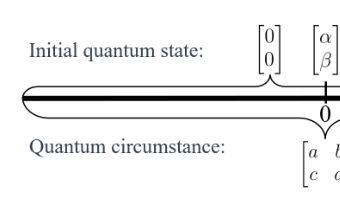
<figcaption class="paper-figure-caption"><b>Fig 2.</b> Figure 1,</figcaption>
</figure>
<figure class="paper-figure-card">
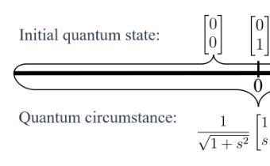
<figcaption class="paper-figure-caption"><b>Fig 3.</b> Figure 2. Constant quantum circumstance with quasi-inner scattering ra- tio s.</figcaption>
</figure>
<figure class="paper-figure-card">
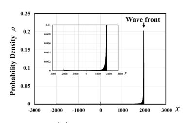
<figcaption class="paper-figure-caption"><b>Fig 4.</b> Figure 3. Dependence on s: the numerical calculation shows (a) for s = 0.1 and (b) for s = 2.</figcaption>
</figure>
<figure class="paper-figure-card">
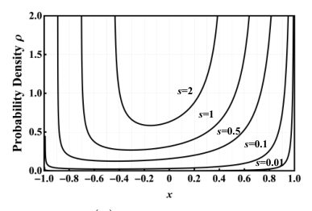
<figcaption class="paper-figure-caption"><b>Fig 5.</b> Figure 4. Dependence on s in (3.2) (a) and the dependence of the velocity of the wavefront on s (b)</figcaption>
</figure>
</div>

<p><strong>Summary.</strong> This paper re-examines the quantum walk model to show it naturally embodies wave-particle complementarity. By analyzing its asymptotic behavior using spectral methods, the authors demonstrate that the model exhibits both particle-like wavefront propagation and wave-like interference patterns. This positions the QW as a powerful mathematical tool for understanding the transition between classical and quantum descriptions.</p>
<p><strong>Why it may be interesting.</strong> It provides a concrete, mathematically tractable model (QW) to explore fundamental concepts like wave-particle duality and the correspondence principle, which are central to quantum optics and open quantum systems.</p>
<details>
<summary>Detailed structure</summary>
<p><strong>Main problem.</strong> The paper reevaluates the quantum walk (QW) model from a quantum mechanical perspective to rigorously demonstrate its inherent wave-particle complementarity.</p>
<p><strong>Main result.</strong> The QW exhibits both particle-like behavior (manifested as wavefront propagation) and wave-like behavior (manifested as interference patterns), with the latter resembling Fraunhofer diffraction.</p>
<p><strong>Method.</strong> The analysis uses spectral decomposition in Fourier space, applying the GJS method to derive the weak limit distribution of the rescaled position variable.</p>
<p><strong>Model / system.</strong> The system is the Quantum Walk (QW) on a discrete space-time lattice, treated as a quantum mechanical toy model analogous to Feynman's path integral.</p>
<p><strong>Key observables.</strong> The weak limit distribution of the Hadamard walk, the wavefront velocity, and the interference profile modulated by $2\cos^2(\ell k(x))$ are key observables.</p>
<p><strong>Important parameters / regimes.</strong> The scattering parameter $s$ is crucial, as it bridges the regimes between classical, particle-like, and wave-like quantum behavior.</p>
<p><strong>Assumptions / limitations.</strong> The QW model is treated as a mathematical toy model for quantum mechanics, and the analysis relies on the spectral formulation and the existence of eigenvalues/eigenvectors.</p>
<p><strong>Figures summary.</strong> Figures illustrate the double-slit model in the QW, comparing diffraction intensity to fold caustic behavior, and showing the dependence of the probability density on the parameter $s$.</p>
<p><strong>Paper structure.</strong> The paper progresses by establishing the QW framework, analyzing its asymptotic moments using spectral methods, and then demonstrating the duality by showing interference patterns and wavefront propagation.</p>
</details>
<details>
<summary>Abstract</summary>
<p>A quantum walk is a mathematical model and a quantum version of a random walk. For the past two decades, it has been studied from mathematical and physical viewpoints. It has many desirable properties. This paper reevaluates quantum walk from a quantum mechanical perspective, as Feynman essentially proposed it as a toy model in his path integral method. Then we demonstrate that the quantum walk model exhibits both particle-like and wave-like properties by showing reflection and partial reflection as a particle and interference as a wave. In particular, for an initial state supported at two sites $\pm\ell$, we explicitly derive the weak limit distribution of the Hadamard walk and show that the Konno distribution is modulated by the interference factor $2\cos^2(\ell k(x))$. The resulting interference profile is reminiscent of far-field (Fraunhofer-type) diffraction.</p>
</details>
<p><sub><a href="#top">↑ back to top</a></sub></p>

<p><a id="paper-2610.24734"></a></p>
<h3 id="microwave-probing-of-magnetic-phases-in-a-dipolar-exchange-magnet-ligdfmath726math"><a href="http://arxiv.org/abs/2610.24734v1">Microwave probing of magnetic phases in a dipolar-exchange magnet LiGdF$_4$</a></h3>
<p><strong>Authors:</strong> S. S. Sosin, A. I. Smirnov, T. A. Soldatov, V. S. Edelman, O. A. Morozov, S. L. Korableva, I. V. Romanova<br>
<strong>Type:</strong> experiment · <strong>Category:</strong> other · <strong>PDF:</strong> <a href="https://arxiv.org/pdf/2610.24734v1">https://arxiv.org/pdf/2610.24734v1</a><br>
<strong>Analysis basis:</strong> full PDF text, analyzed in chunks
<strong>Topic relevance:</strong> <code>analog quantum simulation</code> <strong>3/5</strong> · <code>quantum measurements</code> <strong>1/5</strong></p>
<div class="figure-strip-hint">↔ Scroll figures horizontally</div>
<div class="paper-figures-scroll">
<figure class="paper-figure-card">
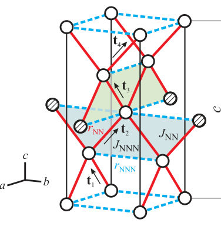
<figcaption class="paper-figure-caption"><b>Fig 1.</b> Figure 1. The tetragonal unit cell of LiGdF4 (only Gd sites are shown) with four additional Gd ions (hatched circles) neighboring the central site in the middle ab square plane. Bold solid lines represent bonds connecting each ion to its nearest neighbors forming the tetrahedron, dashed lines are next-nearest bonds within square ab planes. Arrows denote vectors shifting square planes from one to another</figcaption>
</figure>
<figure class="paper-figure-card">
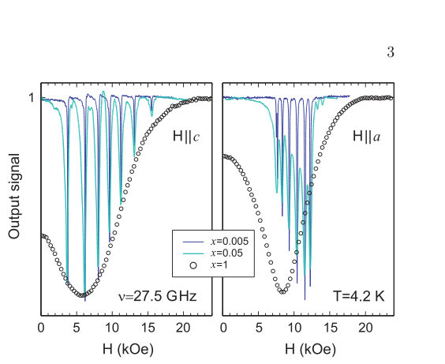
<figcaption class="paper-figure-caption"><b>Fig 2.</b> Figure 2. Magnetic resonance spectra in LiGdF4 (open cir- cles, every 10th point is shown) recorded at a frequency ν = 27.5 GHz and temperature T = 4.2 K for H ∥c (left panel) and H ∥a (right panel). Bold and thin lines repre- sent data from [17] obtained under the same conditions for LiY1−xGdxF4 samples with x = 0.05 and x = 0.005, respec- tively. All data are rescaled to a unit output signal</figcaption>
</figure>
<figure class="paper-figure-card">
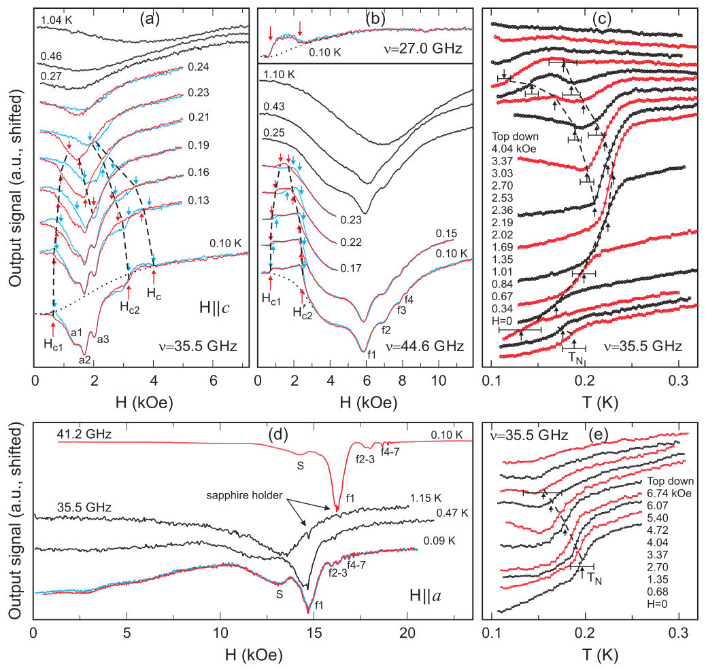
<figcaption class="paper-figure-caption"><b>Fig 3.</b> Figure 3. Transmitted microwave signals recorded at several fixed temperatures for H ∥c at frequencies ν = 35.5 GHz (a), 44.6 and 27.0 GHz (b); for H ∥a at frequencies ν = 35.5 GHz and 41.2 GHz (d). Black solid curves — T &gt; TN, blue and red curves — T &lt; TN on a forward and backward field sweep, respectively, dotted lines extrapolate the resonance background outside ordered phase, the resonance modes at ν = 35.5 GHz are marked as a1, a2, a3. Resonance lines in the paramagnetic phase are denoted as “f1–f4” for H ∥c and “f1–f7, S” for H ∥a. Panels c and e show temperature scans of the transmitted microwave signal (at ν = 35.5 GHz) at several constant values of the external field H ∥c (c) and H ∥a...</figcaption>
</figure>
<figure class="paper-figure-card">
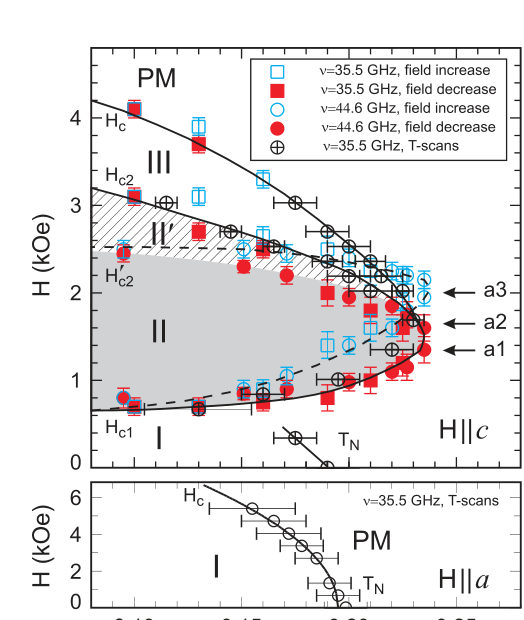
<figcaption class="paper-figure-caption"><b>Fig 4.</b> Figure 4. Phase diagram of LiGdF4 in magnetic field. Upper panel: H ∥c, points are explained in the legend, solid lines are guide-to-eye phase boundaries obtained from field-down and temperature scans, dashed line is a phase II boundary from field-up scans, shaded and hatched areas correspond to phases where the resonance modes a1, a2, a3 (see Fig. 3 a) are observed (their positions are marked by arrows on the right). Lower panel: H ∥a, points are obtained from temperature scans, solid line is the theoretical fit (see text)</figcaption>
</figure>
</div>

<p><strong>Summary.</strong> This paper reports on low-temperature magnetic resonance measurements on LiGdF4, a dipolar-exchange antiferromagnet. The authors map out a complex magnetic phase diagram, identifying multiple field-induced transitions below 0.2 K. The findings suggest that competing exchange and dipolar interactions are responsible for the system's unusual magnetic ordering and phase behavior.</p>
<p><strong>Why it may be interesting.</strong> The detailed mapping of a complex magnetic phase diagram using spectroscopic techniques provides empirical data on magnetic frustration and field-induced quantum/classical phase transitions, relevant to understanding many-body ground states.</p>
<details>
<summary>Detailed structure</summary>
<p><strong>Main problem.</strong> The study investigates the complex magnetic phase diagram and low-temperature magnetic ordering in the dipolar-exchange antiferromagnet LiGdF4.</p>
<p><strong>Main result.</strong> The research reports observing a transition into an ordered state below 0.19 K and detecting a sequence of field-induced phase transitions governed by competing exchange and dipolar interactions.</p>
<p><strong>Method.</strong> Microwave spectroscopy measurements were performed on single-crystal samples, utilizing both field scans and temperature scans.</p>
<p><strong>Model / system.</strong> The system is a weakly anisotropic dipolar-exchange antiferromagnet, LiGdF4, whose magnetic behavior is modeled by a Hamiltonian incorporating dipolar, single-ion anisotropy, and exchange coupling terms.</p>
<p><strong>Key observables.</strong> Magnetic resonance spectra, nonresonant signal anomalies (steps/kinks), and the temperature/field dependence of these features.</p>
<p><strong>Important parameters / regimes.</strong> Critical transition temperatures ($T_N = 0.19 	ext{ K}$), critical magnetic fields ($H_{c1}, H_{c2}$), and characteristic energy scales ($E_{dd} \simeq 0.6 	ext{ K}$).</p>
<p><strong>Assumptions / limitations.</strong> The analysis combines dynamic (resonance) and nonresonant signal features, and the complex phase diagram is attributed to magnetic frustration from competing interactions.</p>
<p><strong>Figures summary.</strong> Figures illustrate magnetic resonance spectra taken at various temperatures and magnetic fields, mapping out the phase boundaries and transition points.</p>
<p><strong>Paper structure.</strong> The paper systematically presents experimental results from microwave probing, first establishing the low-temperature ordering transition, then mapping out the field-dependent phase transitions, and finally interpreting these results through the lens of competing magnetic interactions.</p>
</details>
<details>
<summary>Abstract</summary>
<p>We report the results of low-temperature magnetic resonance measurements performed on a single-crystal sample of a weakly anisotropic dipolar-exchange antiferromagnet LiGdF$_4$. The transformation of a resonance spectrum due to the formation of the ordered phase is observed at temperatures below $T_N=0.19(1)$ K. A sequence of field-induced phase transitions is detected for the external magnetic field applied along the fourfold axis of the crystal. A well-resolved magnetic resonance spectrum is observed in one of the low-field magnetic phases as well as above the saturation field. Competing exchange and dipolar interactions, as a special type of magnetic frustration, are suggested to account for the delayed ordering and complex magnetic phase diagram of the system.</p>
</details>
<p><sub><a href="#top">↑ back to top</a></sub></p>

<p><a id="paper-2610.24334"></a></p>
<h3 id="power-law-correlations-without-apparent-temperature-tuned-criticality-in-fixed-tree-hierarchical-languages"><a href="http://arxiv.org/abs/2610.24334v1">Power-Law Correlations Without Apparent Temperature-Tuned Criticality in Fixed-Tree Hierarchical Languages</a></h3>
<p><strong>Authors:</strong> Marcel Kühn, Bernd Rosenow<br>
<strong>Type:</strong> theory · <strong>Category:</strong> disordered systems and neural networks · <strong>PDF:</strong> <a href="https://arxiv.org/pdf/2610.24334v1">https://arxiv.org/pdf/2610.24334v1</a><br>
<strong>Analysis basis:</strong> full PDF text, analyzed in chunks
<strong>Topic relevance:</strong> <code>non-equilibrium universality</code> <strong>3/5</strong> · <code>driven-dissipative phase transition</code> <strong>1/5</strong></p>
<div class="figure-strip-hint">↔ Scroll figures horizontally</div>
<div class="paper-figures-scroll">
<figure class="paper-figure-card">
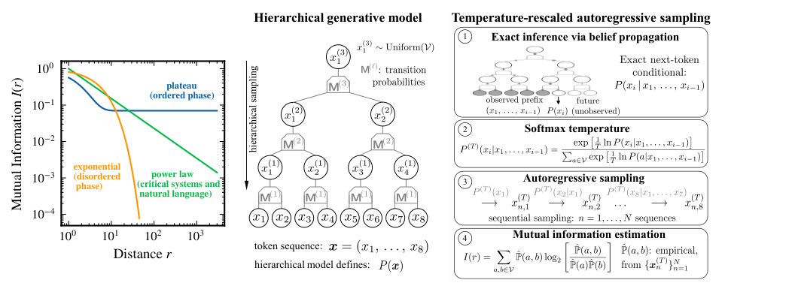
<figcaption class="paper-figure-caption"><b>Fig 1.</b> FIG. 1. Left: Schematic plot of different mutual-information behaviors. In the 2D Ising model, an ordered phase would show a plateau in the mutual information, whereas a disordered phase would show exponential decay. At criticality, correlations decay as a power law. Natural language likewise exhibits an approximate power-law decay of correlations. We ask whether such decay requires tuning to a special sampling temperature. Center: Structure of the synthetic language for s = 2 and L = 3. Right: Protocol for autoregressively sampling text from this language at a modified temperature.</figcaption>
</figure>
<figure class="paper-figure-card">
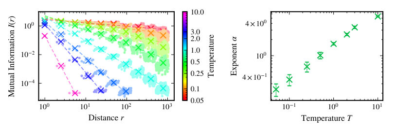
<figcaption class="paper-figure-caption"><b>Fig 2.</b> FIG. 2. Temperature dependence of the two-point mutual information in a grammar drawn from the full-support rule ensemble with heterogeneous probabilities, with v = 16, L = 10, and s = 2, corresponding to sequence length d = 1024. More details are given in Section A. Left: Empirical mutual information I(r) as a function of token distance r for several decoding temperatures. Points show estimates at individual distances, crosses indicate averages over distances that share the same lowest common ancestor with the last token, and dashed lines show power-law fits. Right: Fitted effective exponent α in I(r) ∼r−α as a function of temperature. Temperature changes both the magnitude and the...</figcaption>
</figure>
<figure class="paper-figure-card">
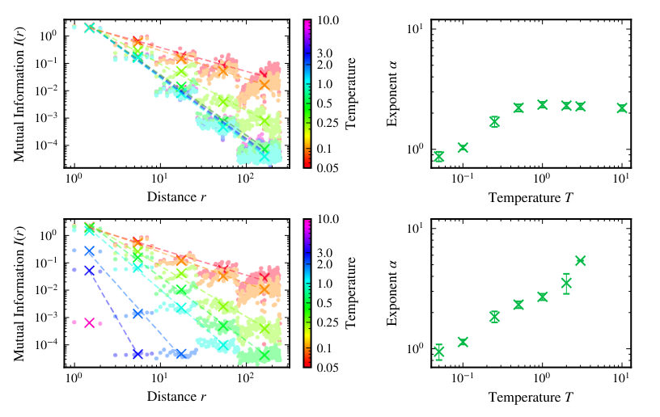
<figcaption class="paper-figure-caption"><b>Fig 3.</b> FIG. 3. Temperature dependence of the two-point mutual information in grammars drawn from sparse rule ensembles with branching factor s = 3, L = 5, v = 16, and m = 4 allowed transition rules per parent. Top row: Strictly sparse grammar with ε = 0. Bottom row: Softened sparse grammar with ε = 0.1. In the strict case, forbidden transitions remain forbidden at all finite temperatures and therefore continue to sustain correlations even at high temperature. In the softened case, high temperature weakens the preferred sparse structure, but the observed decay remains well described by a power law over the sampled range. Additional results for sparse transition rules, including results for s = 2...</figcaption>
</figure>
<figure class="paper-figure-card">
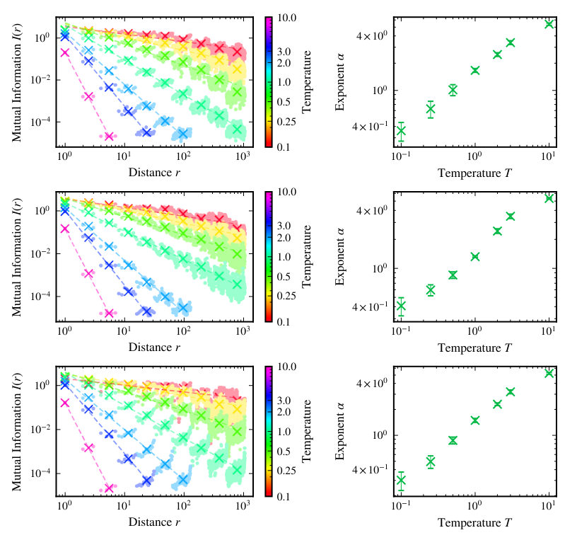
<figcaption class="paper-figure-caption"><b>Fig 4.</b> FIG. 4. Additional temperature sweeps for the full-support heterogeneous rule ensemble with v = 16, s = 2, L = 10, d = 1024, and σ = 5. Rows correspond to three independent rule draws. Left column: empirical two-point mutual information I(r) as a function of token distance r. Points show individual distance estimates, crosses show averages over distances with the same common-ancestor level, and dashed lines show power-law fits to the averaged points. Right column: fitted effective exponent α in I(r) ∼r−α as a function of decoding temperature. Each curve is estimated from 2.0 × 107 autoregressively sampled strings. Error bars denote two standard errors from the fit; missing error bars...</figcaption>
</figure>
<figure class="paper-figure-card">
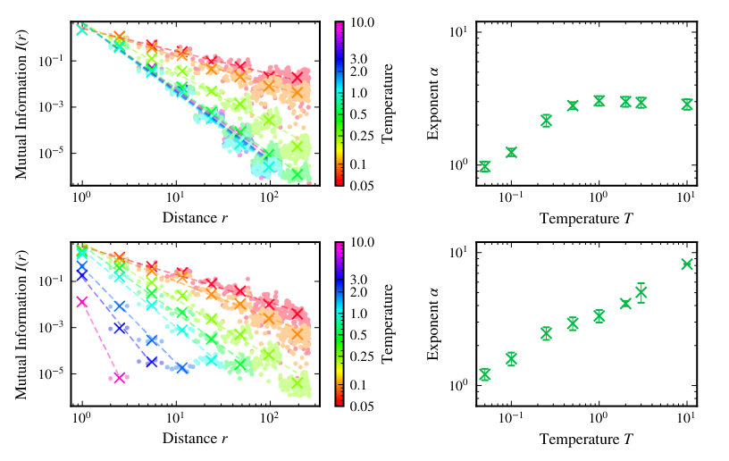
<figcaption class="paper-figure-caption"><b>Fig 5.</b> FIG. 5. Temperature dependence of two-point mutual information in sparse rule ensembles with branching factor s = 2 and m = 3 allowed transition rules per parent. Top row: strictly sparse grammar with ε = 0. Bottom row: softened sparse grammar with ε = 0.1. Left column: empirical mutual information I(r) as a function of token distance r. Points show individual distance estimates, crosses show common-ancestor-level averages, and dashed lines show power-law fits. Right column: fitted effective exponent α in I(r) ∼r−α as a function of decoding temperature. Each curve is estimated from 2.0 × 108 autoregressively sampled strings. Error bars denote two standard errors from the fit; missing error...</figcaption>
</figure>
</div>

<p><strong>Summary.</strong> This paper investigates the origin of power-law correlations in language models by using a simplified, controlled model based on a fixed hierarchical grammar. By measuring mutual information across varying temperatures, the authors show that the power-law decay persists due to the underlying tree structure, even without tuning to a special critical temperature. This clarifies the structural contributions to long-range correlations before considering the complexities of fully trained neural networks.</p>
<p><strong>Why it may be interesting.</strong> The work provides a clean, analytically tractable baseline for understanding how structural constraints (like those in a tree) can induce critical-like scaling (power laws) in correlation measures, which is relevant for understanding emergent physics in complex, structured systems.</p>
<details>
<summary>Detailed structure</summary>
<p><strong>Main problem.</strong> To determine if power-law correlations observed in language models stem from a genuine phase transition or if they can arise solely from the fixed hierarchical structure and temperature rescaling of the model.</p>
<p><strong>Main result.</strong> The mutual information consistently follows a power-law envelope across tested temperatures, suggesting that the hierarchical structure alone can sustain power-law correlations without tuning to a special critical temperature.</p>
<p><strong>Method.</strong> The study uses a controlled analogue—a probabilistic context-free grammar on a fixed tree—to compute and measure the two-point mutual information between tokens as a function of separation.</p>
<p><strong>Model / system.</strong> The model is a finite-depth probabilistic context-free grammar defined on a fixed hierarchical tree. The process involves computing exact next-token conditionals via belief propagation and then rescaling them using a softmax temperature before autoregressive sampling.</p>
<p><strong>Key observables.</strong> Two-point mutual information, I(r), measured as a function of token separation r; the fitted exponent $\alpha(T)$ vs. temperature $T$.</p>
<p><strong>Important parameters / regimes.</strong> Decoding temperature $T$; grammar ensemble type (full-support vs. sparse support); system size (depth of the grammar).</p>
<p><strong>Assumptions / limitations.</strong> The analysis provides a controlled baseline, assuming the fixed hierarchical structure is the sole source of correlation, thereby excluding effects from training data or neural architecture.</p>
<p><strong>Figures summary.</strong> Figures illustrate the expected power-law, plateau, and exponential decay behaviors for mutual information. Specific plots show the power-law envelope of $I(r)$ across varying temperatures and compare the goodness-of-fit between power-law and exponential models.</p>
<p><strong>Paper structure.</strong> The paper establishes the controlled model (PCFG on a tree), details the measurement of mutual information $I(r)$ under temperature rescaling, presents results showing persistent power-law decay, and concludes by mapping this behavior to an Ising model on a tree.</p>
</details>
<details>
<summary>Abstract</summary>
<p>Sampling temperature can substantially reshape autoregressive generation, but it is unclear when temperature changes in long-range correlations reflect a genuine phase transition rather than a smooth change in statistics. We study this question in a controlled analogue of temperature sampling: a finite-depth probabilistic context-free grammar on a fixed hierarchical tree, where exact next-token conditionals are computed by belief propagation and then rescaled by a softmax temperature before autoregressive sampling. We measure two-point mutual information between tokens as a function of separation. Across the tested temperatures and grammar ensembles, mutual information remains well described by a power-law envelope. Temperature changes the correlation magnitude and fitted exponent, but within the accessible system sizes we find no long-distance plateau characteristic of an ordered phase and no clear crossover to short-range exponential decay. An approximate mapping to an Ising model on a tree explains how exponential decay in tree distance becomes a power law in token distance, allowing power laws to persist without tuning to a special decoding temperature. This controlled baseline clarifies which temperature effects can arise from hierarchical structure alone, before adding training, approximation error, or neural architecture.</p>
</details>
<p><sub><a href="#top">↑ back to top</a></sub></p>

<p><a id="paper-2610.24565"></a></p>
<h3 id="surface-corrections-and-vortex-energetics-in-the-thomas-fermi-limit-of-a-self-bound-unitary-fermi-superfluid"><a href="http://arxiv.org/abs/2610.24565v1">Surface corrections and vortex energetics in the Thomas--Fermi limit of a self-bound unitary Fermi superfluid</a></h3>
<p><strong>Authors:</strong> Bao-Duy Le<br>
<strong>Type:</strong> theory · <strong>Category:</strong> quantum gases · <strong>PDF:</strong> <a href="https://arxiv.org/pdf/2610.24565v1">https://arxiv.org/pdf/2610.24565v1</a><br>
<strong>Analysis basis:</strong> full PDF text, analyzed in chunks
<strong>Topic relevance:</strong> <code>analog quantum simulation</code> <strong>3/5</strong> · <code>Keldysh / 2PI / non-Gaussian methods</code> <strong>1/5</strong></p>
<div class="figure-strip-hint">↔ Scroll figures horizontally</div>
<div class="paper-figures-scroll">
<figure class="paper-figure-card">
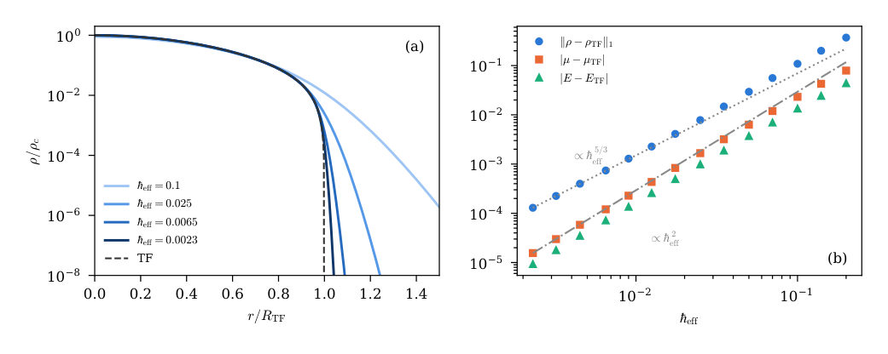
<figcaption class="paper-figure-caption"><b>Fig 1.</b> FIG. 1. Static star. (a) Density profiles for four values of ℏeff against the TF profile (Lane–Emden index 3/2). (b) L1 density deviation and deviations of µ and E from TF; guides ∝ℏ5/3 eff and ∝ℏ2 eff.</figcaption>
</figure>
<figure class="paper-figure-card">
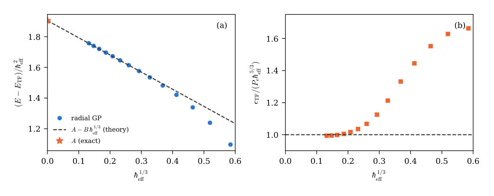
<figcaption class="paper-figure-caption"><b>Fig 2.</b> FIG. 2. Test of Theorem 1 and Proposition 1. (a) (E −ETF)/ℏ2 eff against ℏ1/3 eff ; the star is the exact limit A, the dashed line A −Bℏ1/3 eff with B from Eq. (10). (b) L1 density error ϵTF = ∥ρ −ρTF∥1 in units of the predicted Pϵℏ5/3 eff .</figcaption>
</figure>
<figure class="paper-figure-card">
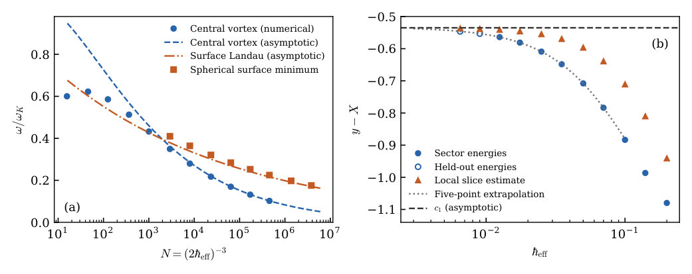
<figcaption class="paper-figure-caption"><b>Fig 3.</b> FIG. 3. (a) Central-vortex energy threshold ωc1 (circles) and sampled surface minima from the spherical spectrum (squares). Dashed: Eq. (16); dash-dotted: the continuum Landau estimate Eq. (25). Both curves have coefficients fixed by the universal problems. The spherical scans include every integer multipolarity on both sides of the minima (Table IV). These are energy scales, not a nonlinear phase diagram. (b) Constant term y −X, where y = ωc1R2 TF/(C3/2ℏeff) is the threshold in units of the leading prefactor of Eq. (16) and X = ln(RTF/ξ0); y −X →c1 as ℏeff →0. Filled circles: sector energies; triangles: slice estimate Eq. (19) on the computed density; dashed: the theoretical c1 = −0.5351;...</figcaption>
</figure>
<figure class="paper-figure-card">
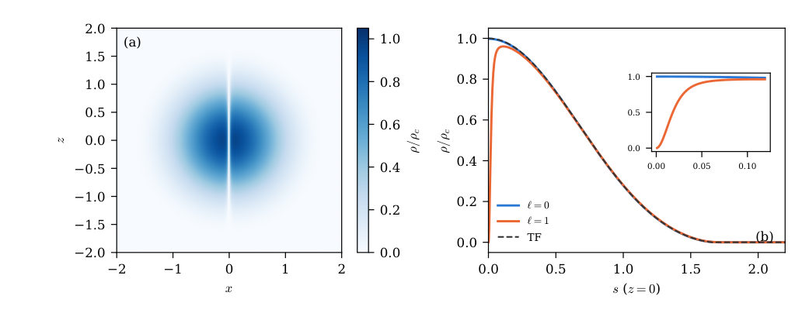
<figcaption class="paper-figure-caption"><b>Fig 4.</b> FIG. 4. Central vortex at ℏeff = 0.0125 (N = 6.4 × 104). (a) Density of the ℓ= 1 state in the meridional plane y = 0. (b) Equatorial profiles of the ℓ= 0 and ℓ= 1 states against TF as functions of the cylindrical radius s; inset: the core, of width ∼ξ0 = 0.014. Lengths in units of rN.</figcaption>
</figure>
<figure class="paper-figure-card">
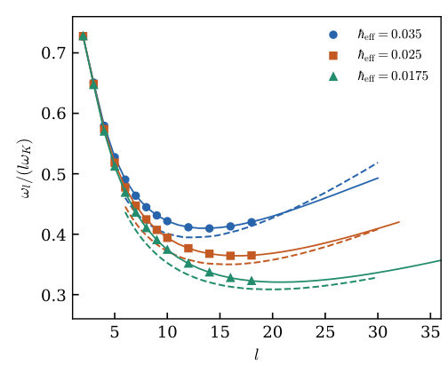
<figcaption class="paper-figure-caption"><b>Fig 5.</b> FIG. 5. Surface-mode energy per unit angular momentum, ωl/l, in units of ωK for three values of ℏeff. Symbols are the archived real-time frequencies; solid lines join the spherical eigenfrequencies at every integer l. Dashed lines are the large- l surface formula Eq. (24), shown for l ≥6, with no fitted coefficient.</figcaption>
</figure>
</div>

<p><strong>Summary.</strong> This paper rigorously calculates the energy corrections associated with the surface and the formation of quantized vortices in a unitary Fermi superfluid using the Thomas-Fermi approximation. By employing matched asymptotics and extensive numerical simulations, the authors distinguish between bulk physics and the critical gradient physics that governs surface and vortex stability. The results offer precise theoretical benchmarks for understanding superfluid behavior in trapped atomic gases.</p>
<p><strong>Why it may be interesting.</strong> It provides rigorous theoretical tools to calculate finite-size corrections (surface/vortex) in strongly interacting quantum many-body systems, which is crucial for understanding real-world trapped atomic experiments.</p>
<details>
<summary>Detailed structure</summary>
<p><strong>Main problem.</strong> The study investigates surface corrections and the energetics of quantized vortices in a self-bound unitary Fermi superfluid within the Thomas-Fermi (TF) limit.</p>
<p><strong>Main result.</strong> The analysis successfully separates the accuracy of the TF bulk description from the gradient physics governing the surface and vortex core, providing quantitative thresholds for vortex energy.</p>
<p><strong>Method.</strong> The work combines theoretical derivations using extended Thomas-Fermi functionals, matched asymptotics for boundary layers, and numerical testing via Bogoliubov-Poisson and real-time calculations.</p>
<p><strong>Model / system.</strong> The system is a spin-balanced unitary Fermi superfluid interacting via an attractive 1/r potential, analyzed in the large-particle-number limit using an extended Thomas-Fermi density functional.</p>
<p><strong>Key observables.</strong> Central vortex energy threshold, local energetic thresholds for surface excitations, and the surface Landau scale.</p>
<p><strong>Important parameters / regimes.</strong> Particle number (N), effective Planck constant (hbar_eff), and the polytropic index (3/2).</p>
<p><strong>Assumptions / limitations.</strong> The analysis relies on the Thomas-Fermi approximation and asymptotic matching techniques; nonlinear vortex entry dynamics are noted as open problems.</p>
<p><strong>Figures summary.</strong> Figures illustrate density profiles for different angular momenta ($\ell$), and show the calculated surface-mode energy ($\omega_l/l$) compared against theoretical predictions.</p>
<p><strong>Paper structure.</strong> The paper progresses from establishing the TF limit and leading gradient corrections to deriving the vortex energy via matched asymptotics, followed by extensive numerical validation of surface modes and vortex matching.</p>
</details>
<details>
<summary>Abstract</summary>
<p>We study a spin-balanced unitary Fermi superfluid bound by an attractive $1/r$ interaction within an extended Thomas--Fermi density functional. Its large-particle-number limit is the Lane--Emden polytrope of index $3/2$. We prove the leading gradient correction to the ground-state energy and strong convergence of the density amplitude. A rescaled surface problem predicts the next energy correction and the leading integrated density error. Matching a vortex core to the polytropic bulk gives the energetic threshold of a singly quantized central vortex, including the constant beyond the leading logarithm. Linearizing the same surface problem predicts a local energetic threshold for collective surface excitations that, in the natural TF frequency units, decreases more slowly with particle number than the central-vortex threshold. Radial stationary, spherical Bogoliubov--Poisson, and axisymmetric real-time calculations test the predicted energy corrections and vortex matching, and resolve finite-size surface-mode minima whose approach to the continuum surface coefficient is followed to $N\simeq4\times10^6$. For the reference gradient coefficient the vortex constant is $c_1=-0.535$, and the surface Landau scale is $1.417\,ω_K(\hbar_{\rm eff}^2/2R_{\rm TF})^{1/6}\propto N^{-1/9}$; sector energies at $N\simeq4.6\times10^5$, computed after the fit, agree with the extrapolated vortex threshold to $10^{-4}$. These results distinguish the accuracy of the Thomas--Fermi bulk from the gradient physics that controls the surface and vortex core, and separate vortex energetics from the open problem of nonlinear vortex entry.</p>
</details>
<p><sub><a href="#top">↑ back to top</a></sub></p>

<p><a id="paper-2610.24942"></a></p>
<h3 id="synchronous-and-asynchronous-monte-carlo-dynamics-of-mean-field-spin-glasses-with-rotationally-invariant-couplings-what-they-share-and-where-they-differ"><a href="http://arxiv.org/abs/2610.24942v1">Synchronous and asynchronous Monte Carlo dynamics of mean-field spin glasses with rotationally invariant couplings: what they share and where they differ</a></h3>
<p><strong>Authors:</strong> Yoshiyuki Kabashima<br>
<strong>Type:</strong> theory · <strong>Category:</strong> disordered systems and neural networks · <strong>PDF:</strong> <a href="https://arxiv.org/pdf/2610.24942v1">https://arxiv.org/pdf/2610.24942v1</a><br>
<strong>Analysis basis:</strong> full PDF text, analyzed in chunks
<strong>Topic relevance:</strong> <code>methods for driven-dissipative</code> <strong>3/5</strong> · <code>Keldysh / 2PI / non-Gaussian methods</code> <strong>1/5</strong></p>
<div class="figure-strip-hint">↔ Scroll figures horizontally</div>
<div class="paper-figures-scroll">
<figure class="paper-figure-card">
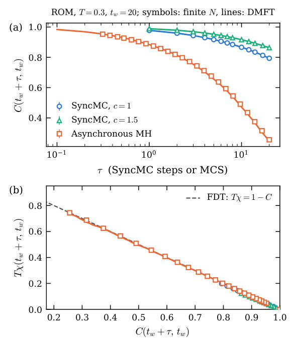
<figcaption class="paper-figure-caption"><b>Fig 1.</b> FIG. 1. ROM at T = 0.3, tw = 20. (a) Correlation function C(tw + τ, tw) versus τ in SyncMC</figcaption>
</figure>
<figure class="paper-figure-card">

<figcaption class="paper-figure-caption"><b>Fig 2.</b> Figure 3 shows the correlation functions and the aging time τ ∗(tw), defined by C(tw +</figcaption>
</figure>
<figure class="paper-figure-card">
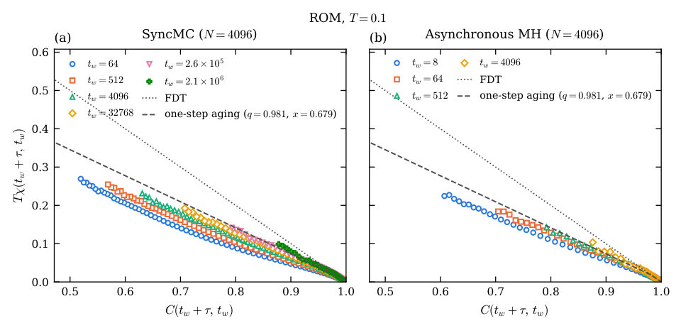
<figcaption class="paper-figure-caption"><b>Fig 3.</b> FIG. 2. Fluctuation–dissipation plots of the ROM at T = 0.1. (a) SyncMC (N = 4096); (b)</figcaption>
</figure>
<figure class="paper-figure-card">
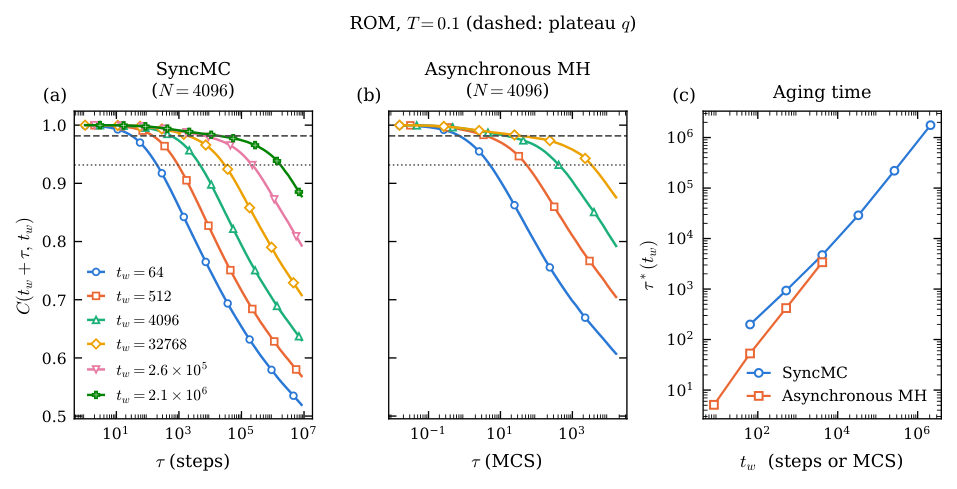
<figcaption class="paper-figure-caption"><b>Fig 4.</b> FIG. 3. Aging of the ROM at T = 0.1. (a), (b) C(tw + τ, tw) for SyncMC (N = 4096) and</figcaption>
</figure>
<figure class="paper-figure-card">
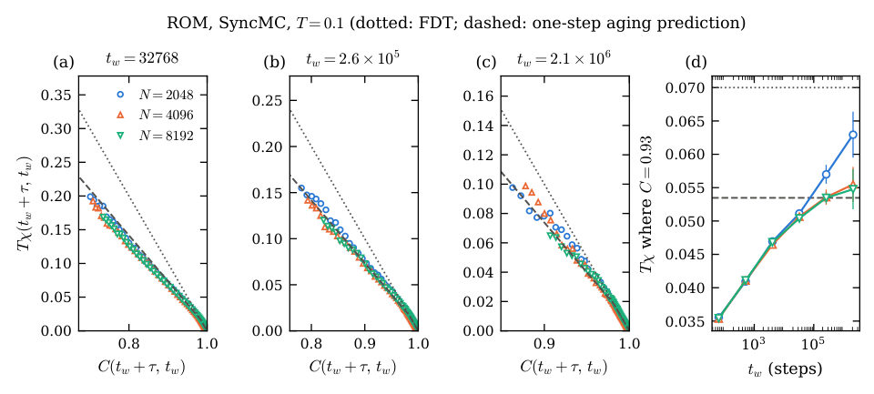
<figcaption class="paper-figure-caption"><b>Fig 5.</b> FIG. 4. Size dependence for SyncMC, ROM at T = 0.1. (a)–(c) Fluctuation–dissipation plots for</figcaption>
</figure>
</div>

<p><strong>Summary.</strong> This paper theoretically compares synchronous and asynchronous Monte Carlo dynamics for mean-field spin glasses. Using Dynamical Mean-Field Theory, the authors show that although the microscopic update rules differ, the macroscopic, slow-time-scale physics—such as the fluctuation-dissipation relations—are identical for both methods. This confirms that the choice of simulation algorithm affects only the speed of convergence, not the final physical state reached.</p>
<p><strong>Why it may be interesting.</strong> The work provides a rigorous theoretical comparison of different simulation algorithms for complex, non-equilibrium systems, which is crucial for accurately modeling dynamics in disordered quantum or classical systems.</p>
<details>
<summary>Detailed structure</summary>
<p><strong>Main problem.</strong> The paper compares the dynamical mean-field theory description of two Monte Carlo Markov Chain dynamics—synchronous (SyncMC) and asynchronous (Metropolis-Hastings, MH)—for mean-field spin glasses.</p>
<p><strong>Main result.</strong> While the specific update rules and noise terms differ, both dynamics yield the same equations for slow time scales, including the fluctuation-dissipation ratio and the Parisi equation.</p>
<p><strong>Method.</strong> The authors use the Guionnet-Maïda formula and derive effective single-spin processes via Dynamical Mean-Field Theory (DMFT) for both update schemes.</p>
<p><strong>Model / system.</strong> The system is an Ising spin glass with rotationally invariant couplings, modeled by a Hamiltonian $H(\sigma) = -rac{1}{2} \sum_{i 
eq j} J_{ij}\sigma_i\sigma_j$. The couplings are analyzed for the Sherrington-Kirkpatrick (SK) model and the random orthogonal model (ROM).</p>
<p><strong>Key observables.</strong> Fluctuation–Dissipation Relation (FDR), Response Function $G(t, s)$, Correlation function $C(t, s)$, and the Parisi equation solution.</p>
<p><strong>Important parameters / regimes.</strong> The comparison is made in the limit $N 	o \infty$ (mean-field limit) and involves analyzing the separation between fast and slow time scales.</p>
<p><strong>Assumptions / limitations.</strong> The analysis assumes that the slow-time-scale equations coincide under time-scale separation, and the MH dynamics are analyzed in a continuous-time limit.</p>
<p><strong>Figures summary.</strong> Not specified, but the notes reference Table I summarizing the differences between the two dynamics and Table V comparing computational costs.</p>
<p><strong>Paper structure.</strong> The paper first introduces the physical model and the two dynamics (SyncMC vs. MH). It then derives the effective single-spin processes using DMFT, comparing the resulting equations and identifying the shared and unique terms for each dynamics. Finally, it confirms the equivalence of slow-time-scale physics via simulations.</p>
</details>
<details>
<summary>Abstract</summary>
<p>We compare two Markov chain Monte Carlo dynamics for Ising spin glasses with rotationally invariant couplings: the synchronous Monte Carlo method (SyncMC), which updates all spins in parallel with the help of Gaussian auxiliary fields, and asynchronous Metropolis-Hastings dynamics, which updates one spin at a time. Using the Guionnet-Maïda formula, we derive the dynamical mean-field theory of both dynamics in terms of the R-transform of the coupling spectrum. The two effective single-spin processes share a retarded self-interaction and a Gaussian noise; SyncMC has, in addition, an instantaneous self-coupling and a noise that depends only on the response function. These additional terms act only on the fastest time scale, so that the equations for slow time scales, including the fluctuation-dissipation ratio and, for the Sherrington-Kirkpatrick model, the Parisi equation, are the same for the two dynamics. Simulations of the random orthogonal and Sherrington-Kirkpatrick models confirm that both dynamics approach the same fluctuation-dissipation relations, differing only in how many updates they need to do so.</p>
</details>
<p><sub><a href="#top">↑ back to top</a></sub></p>

<p><a id="paper-2610.24637"></a></p>
<h3 id="turning-number-and-the-geometry-of-disorder-induced-topology"><a href="http://arxiv.org/abs/2610.24637v1">Turning Number and the Geometry of Disorder-Induced Topology</a></h3>
<p><strong>Authors:</strong> Lars Emmrich, Michael Potthoff<br>
<strong>Type:</strong> theory · <strong>Category:</strong> disordered systems and neural networks · <strong>PDF:</strong> <a href="https://arxiv.org/pdf/2610.24637v1">https://arxiv.org/pdf/2610.24637v1</a><br>
<strong>Analysis basis:</strong> full PDF text, analyzed in chunks
<strong>Topic relevance:</strong> <code>analog quantum simulation</code> <strong>3/5</strong> · <code>Keldysh / 2PI / non-Gaussian methods</code> <strong>1/5</strong></p>
<div class="figure-strip-hint">↔ Scroll figures horizontally</div>
<div class="paper-figures-scroll">
<figure class="paper-figure-card">
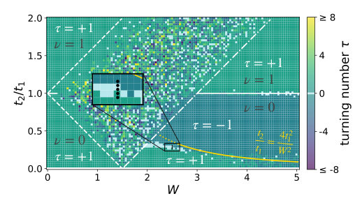
<figcaption class="paper-figure-caption"><b>Fig 1.</b> FIG. 1. Turning number τ (color code) as a function of t2/t1 and W for t1 = 0.75. Left of the dashed and right of the dashed-dotted line, Weyl’s inequality guarantees an open spectral gap.</figcaption>
</figure>
<figure class="paper-figure-card">
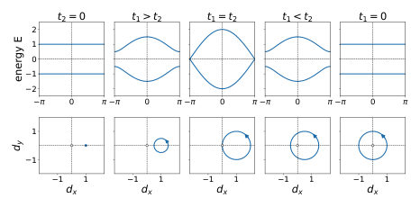
<figcaption class="paper-figure-caption"><b>Fig 2.</b> FIG. 2. Band structure ϵ±(k) for −π &lt; k ≤π (top) and Bloch vector d0(k) (bottom) in the clean limit W = 0. From left to right: (t1, t2) = (1, 0), (1, 0.5), (1, 1), (0.5, 1), (0, 1).</figcaption>
</figure>
<figure class="paper-figure-card">
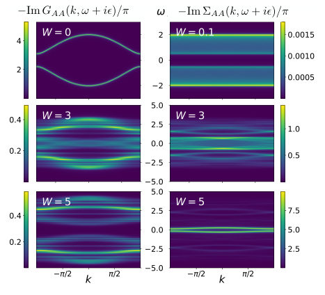
<figcaption class="paper-figure-caption"><b>Fig 3.</b> FIG. 3. Imaginary part of the disorder-averaged Green’s function (left) and of the disorder self-energy (right) for differ- ent disorder strengths W. Parameters: t1 = 0.75, t2 = 1.25, L = 400, N = 1000.</figcaption>
</figure>
<figure class="paper-figure-card">
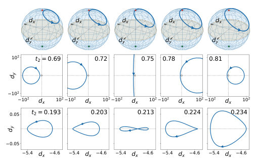
<figcaption class="paper-figure-caption"><b>Fig 4.</b> FIG. 4. Loop d(k) in the dx-dy plane (middle) and its inverse stereographic projection onto the sphere S2 (top panels) for various t2 at W = 3.5 Bottom: The same but for W = 2.5. Parameters: t1 = 0.75, L = 600, N = 1000.</figcaption>
</figure>
<figure class="paper-figure-card">
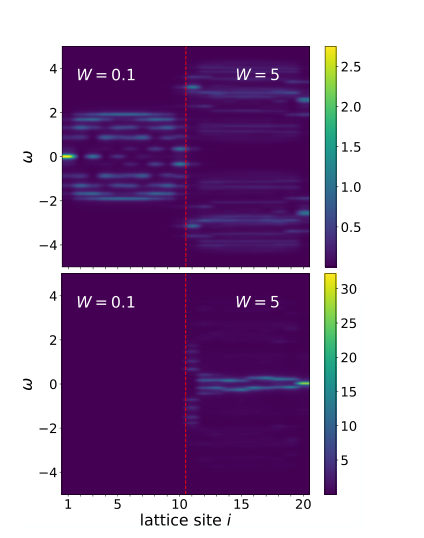
<figcaption class="paper-figure-caption"><b>Fig 5.</b> FIG. 5. Top: Imaginary part of the local, disorder-averaged Green’s function, (−1/π) Im Gii(ω + iϵ), with i = 1, . . . , 20 labeling the sites of an SSH chain with disorder strength W = 0.1 in the left half and W = 5 in the right half (left and right of the dashed red line). Bottom: Imaginary part of the corresponding disorder self-energy, (−1/π) Im Σii(ω + iϵ). Parameters: t1 = 0.75, t2 = 1.25, L = 20, N = 1000, Nω = 200, and ϵ = ∆ω.</figcaption>
</figure>
</div>

<p><strong>Summary.</strong> This work introduces the 'turning number' ($   au$) as a geometric topological invariant to refine the classification of quantum systems beyond standard winding numbers. By applying this to the disordered SSH model, the authors show that $    au$ detects additional phase transitions driven by the geometry of the momentum-space Hamiltonian map, providing a richer phase diagram than previously known.</p>
<p><strong>Why it may be interesting.</strong> The concept of using geometric invariants of momentum-space maps to classify topological phases is highly relevant for understanding complex many-body systems, including those studied in AMO physics (e.g., synthetic gauge fields) or condensed matter systems with engineered disorder.</p>
<details>
<summary>Detailed structure</summary>
<p><strong>Main problem.</strong> To refine the topological characterization of quantum systems beyond the noninteracting clean limit by characterizing the geometry of momentum-space Hamiltonian maps.</p>
<p><strong>Main result.</strong> The turning number ($  au$) provides an additional topological invariant beyond the conventional winding number ($
u$), revealing phase transitions driven by the vanishing of the tangent vector of the Bloch loop, even when the gap remains open.</p>
<p><strong>Method.</strong> The authors analyze the geometry of the Bloch loop traced by the topological Hamiltonian $H_{	ext{top}}(k)$ derived from the zero-frequency Green's function, calculating both the winding number ($
u$) and the turning number ($    au$).</p>
<p><strong>Model / system.</strong> The study uses the one-dimensional chiral Su-Schrieffer-Heeger (SSH) model subjected to disorder. The topological properties are encoded in the momentum-space Hamiltonian map $H_{	ext{top}}(k) = -G^{-1}(k, i\omega = 0)$.</p>
<p><strong>Key observables.</strong> Winding number ($
u$), Turning number ($    au$), Spectral gap, and the geometry of the Bloch loop $d(k)$.</p>
<p><strong>Important parameters / regimes.</strong> Disorder strength ($W$), hopping ratios ($t_2/t_1$), and the momentum $k$ within the Brillouin Zone (BZ).</p>
<p><strong>Assumptions / limitations.</strong> The analysis relies on the topological Hamiltonian derived from the zero-frequency Green's function, and the turning number is defined as the winding number of the tangent vector, which requires $\partial_k d(k) 
eq 0$.</p>
<p><strong>Figures summary.</strong> Figures illustrate $   au$ transitions as a function of disorder and hopping ratios, show band structures for the clean limit, and display the disorder-averaged Green's function revealing gap reopening.</p>
<p><strong>Paper structure.</strong> The paper introduces the concept of geometric invariants ($    au$) to complement standard topological invariants ($
u$). It applies this framework to the disordered SSH model, demonstrating that $    au$ captures transitions invisible to $
u$, especially in the strong disorder regime.</p>
</details>
<details>
<summary>Abstract</summary>
<p>The geometry of momentum-space Hamiltonian maps derived from the zero-frequency single-particle Green's function provides a route to a refined topological characterization of quantum systems beyond the noninteracting clean limit. The central idea is to complement standard topological invariants by invariants that characterize the geometry of the map itself. As a paradigmatic example, we study the one-dimensional chiral Su-Schrieffer-Heeger model with disorder, where the topological Hamiltonian defines a planar Bloch loop. In addition to its conventional winding number, this loop possesses an integer turning number that characterizes the winding of its tangent vector. We identify turning-number transitions that occur while the topological Hamiltonian remains finite and spectrally gapped, driven solely by a vanishing tangent vector of the Bloch loop, and obtain an extended phase diagram with additional topological structure beyond the winding-number classification. Asymptotic analysis predicts the emergence and disorder dependence of the corresponding transition regime, in agreement with the numerical results. Our findings establish the geometry of momentum-space Hamiltonian maps as an additional source of topological structure beyond conventional classifications.</p>
</details>
<p><sub><a href="#top">↑ back to top</a></sub></p>

<p><a id="paper-2610.26246"></a></p>
<h3 id="universal-quantum-criticality-from-a-gaussian-variational-manifold"><a href="http://arxiv.org/abs/2610.26246v1">Universal Quantum Criticality from a Gaussian Variational Manifold</a></h3>
<p><strong>Authors:</strong> Reyhaneh Khasseh, Fabian Ballar Trigueros, Markus Heyl, M. A. Rajabpour<br>
<strong>Type:</strong> theory · <strong>Category:</strong> statistical mechanics · <strong>PDF:</strong> <a href="https://arxiv.org/pdf/2610.26246v1">https://arxiv.org/pdf/2610.26246v1</a><br>
<strong>Analysis basis:</strong> full PDF text, analyzed in chunks
<strong>Topic relevance:</strong> <code>Keldysh / 2PI / non-Gaussian methods</code> <strong>3/5</strong> · <code>analog quantum simulation</code> <strong>1/5</strong></p>
<div class="figure-strip-hint">↔ Scroll figures horizontally</div>
<div class="paper-figures-scroll">
<figure class="paper-figure-card">
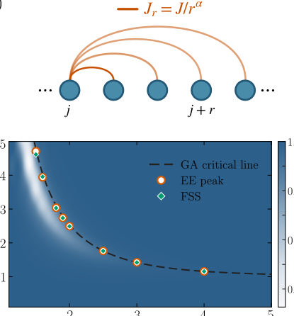
<figcaption class="paper-figure-caption"><b>Fig 1.</b> FIG. 1. Gaussian variational description of the long- range Ising chain. (a) Schematic of the chain with ferro- magnetic couplings Jr = J/rα. Representative bonds from one site are shown; all pairs interact. (b) Fidelity between the optimized Gaussian state and the exact finite-size ground state for L = 20, together with the thermodynamic Gaussian critical line (dashed curve) and finite-size estimates of the crit- ical field from the entanglement-entropy peak (EE peak) and Binder-cumulant crossings (FSS). The fidelity is reduced most strongly near the critical line, yet the Gaussian prediction for the critical field remains in close agreement with the finite-size estimates. Fields are...</figcaption>
</figure>
<figure class="paper-figure-card">
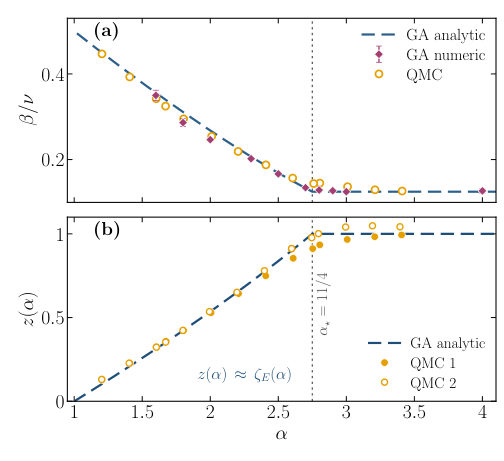
<figcaption class="paper-figure-caption"><b>Fig 2.</b> FIG. 2. Critical exponents. (a) Magnetic exponent β/ν, comparing Gaussian finite-size results, benchmark data, and the analytic prediction β/ν = xσ/2. (b) Dynamical exponent z: QMC estimates from Ref. [44] are compared with the static Euler exponent ζE(α), providing a numerical test of the predicted relation z = ζE.</figcaption>
</figure>
<figure class="paper-figure-card">
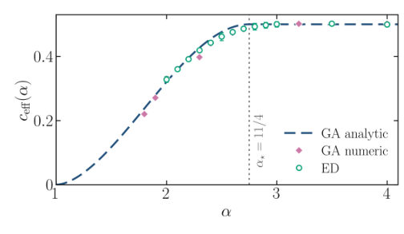
<figcaption class="paper-figure-caption"><b>Fig 3.</b> FIG. 3. Logarithmic entanglement coefficient. Numerical estimates of ceff from optimized Gaussian states and ED, com- pared with the analytic dilogarithm expression Eq. (22). The short-range branch approaches ceff = 1/2. In the long-range regime the quantity is interpreted as a logarithmic entangle- ment coefficient rather than automatically as a conformal central charge.</figcaption>
</figure>
<figure class="paper-figure-card">
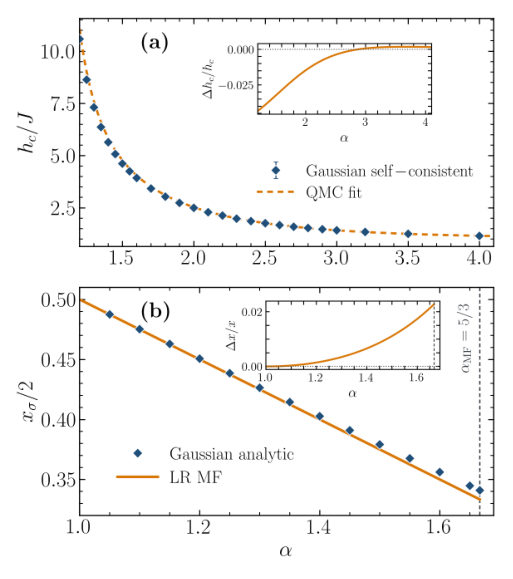
<figcaption class="paper-figure-caption"><b>Fig 4.</b> FIG. 4. Gaussian critical line and magnetic exponent. (a) Blue diamonds show the thermodynamic self-consistent Gaussian critical fields after extrapolation rmax →∞; the orange dashed line is the QMC fit [44]. The inset shows their signed relative deviation. (b) Blue diamonds show the analytic Gaussian prediction for xσ/2, while the orange line is the LR MF result (3 −α)/4. The dashed vertical line marks αMF = 5/3; the inset shows the relative difference between the two predictions.</figcaption>
</figure>
</div>

<p><strong>Summary.</strong> This work develops a systematic method to approximate quantum critical points using a fermionic Gaussian variational manifold. By solving a self-consistent Euler equation derived from minimizing the energy functional, the authors accurately predict critical lines and exponents for the long-range Ising chain. The key insight is that the method's success in capturing universal critical behavior is independent of its poor fidelity to the exact ground state near the transition.</p>
<p><strong>Why it may be interesting.</strong> The core finding—that critical universal behavior can be extracted from a mathematically simple, non-interacting variational manifold even when the underlying wave function is highly non-Gaussian—provides a powerful, analytically tractable tool for studying complex critical phenomena.</p>
<details>
<summary>Detailed structure</summary>
<p><strong>Main problem.</strong> To determine if a noninteracting fermionic description (Gaussian variational manifold) can accurately capture the universal long-distance physics of an interacting quantum critical point, even where the microscopic wave-function approximation is weakest.</p>
<p><strong>Main result.</strong> The variational description successfully yields critical lines and analytic predictions for critical exponents that agree with numerical benchmarks, demonstrating that the singular structure of the Gaussian solution captures the essential long-wavelength physics.</p>
<p><strong>Method.</strong> The authors employ a variational approach, restricting the quantum state to a fermionic Gaussian manifold and minimizing the energy functional, which leads to a self-consistent Euler equation.</p>
<p><strong>Model / system.</strong> The study focuses on the ferromagnetic long-range transverse-field Ising chain, described by a Hamiltonian with power-law interactions $J/r^\alpha$. The analysis is performed in the thermodynamic limit using translation invariance.</p>
<p><strong>Key observables.</strong> Critical line location, magnetic correlation exponent ($\chi_\sigma$), dynamical exponent ($z$), and the logarithmic entanglement coefficient ($c_{	ext{eff}}$).</p>
<p><strong>Important parameters / regimes.</strong> The interaction decay exponent $\alpha$, the transverse field $h$, and the system size $L$ (used in finite-size scaling).</p>
<p><strong>Assumptions / limitations.</strong> The primary assumption is the restriction of the variational state to the fermionic Gaussian manifold, which is known to be least accurate near the critical point.</p>
<p><strong>Figures summary.</strong> Figures compare Gaussian variational predictions (e.g., critical fields, exponents) against independent numerical benchmarks (like QMC or Binder cumulant crossings), showing quantitative agreement despite low state fidelity near criticality.</p>
<p><strong>Paper structure.</strong> The paper systematically develops the variational procedure, deriving the self-consistent Euler equation. It then applies this framework to calculate multiple critical observables (exponents, critical lines) and compares these analytic results against finite-size scaling and entanglement entropy diagnostics.</p>
</details>
<details>
<summary>Abstract</summary>
<p>Universal behavior at continuous phase transitions is encoded in long-wavelength fixed-point theories controlled by dimensionality and symmetries. It is a central question for which systems this universal behavior and the underlying long-wavelength description can be captured by a noninteracting theory allowing for analytical and accurate predictions. In this work we provide a systematic procedure for obtaining the best noninteracting fermionic description of a quantum phase transition through fermionic Gaussian states. We demonstrate the performance of our procedure for the interacting long-range transverse-field Ising chain. This formulation reduces the problem to a self-consistent Euler equation that yields a critical line in close agreement with independent numerical benchmarks, while its singular momentum structure provides analytic predictions for continuously varying critical properties. Yet exact diagonalization shows that Gaussian-state fidelity to the exact ground state is poorest, and non-Gaussianity strongest, near the transition. Thus, accurate predictions for critical properties can emerge from the Gaussian variational description even where its microscopic wave-function approximation is weakest.</p>
</details>
<p><sub><a href="#top">↑ back to top</a></sub></p>

<p><a id="paper-2610.26526"></a></p>
<h3 id="exact-projective-steering-boundary-and-sample-size-optimization-for-angularly-averaged-hyperon-antihyperon-states"><a href="http://arxiv.org/abs/2610.26526v1">Exact projective-steering boundary and sample-size optimization for angularly averaged hyperon-antihyperon states</a></h3>
<p><strong>Authors:</strong> Weicheng Miao, Linzhi Jiang, Bingbing Li<br>
<strong>Type:</strong> theory · <strong>Category:</strong> quantum information and computing · <strong>PDF:</strong> <a href="https://arxiv.org/pdf/2610.26526v1">https://arxiv.org/pdf/2610.26526v1</a><br>
<strong>Analysis basis:</strong> full PDF text, analyzed in chunks
<strong>Topic relevance:</strong> <code>quantum measurements</code> <strong>3/5</strong></p>
<div class="figure-strip-hint">↔ Scroll figures horizontally</div>
<div class="paper-figures-scroll">
<figure class="paper-figure-card">
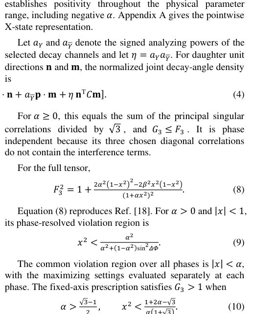
<figcaption class="paper-figure-caption"><b>Fig 1.</b> Figure 1 displays the witnesses and their angular boundaries. At transverse production, 𝐹3 = √1 + 2𝛼2 and 𝐺3 = (1 + 2𝛼)/√3 . These fixed-angle results set the reference for the angularly averaged states studied below.</figcaption>
</figure>
<figure class="paper-figure-card">
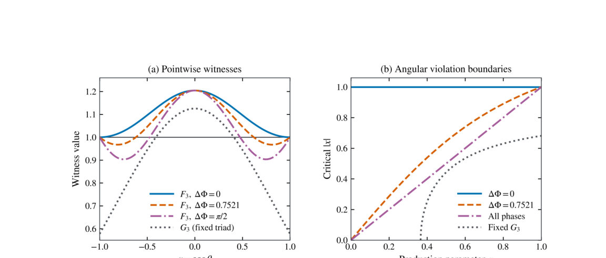
<figcaption class="paper-figure-caption"><b>Fig 2.</b> Fig. 1 Pointwise witnesses and their angular boundaries. Panel (a) uses 𝛼= 0.4748 and the three indicated phases; the dotted curve is the fixed-triad value. Panel (b) gives the critical |𝑥| for the phase-resolved optimum, its all-phase guarantee, and the fixed prescription. The fixed-prescription curve is absent where no violation is possible. These pointwise results serve as the benchmark for the finite-bin analysis.</figcaption>
</figure>
<figure class="paper-figure-card">
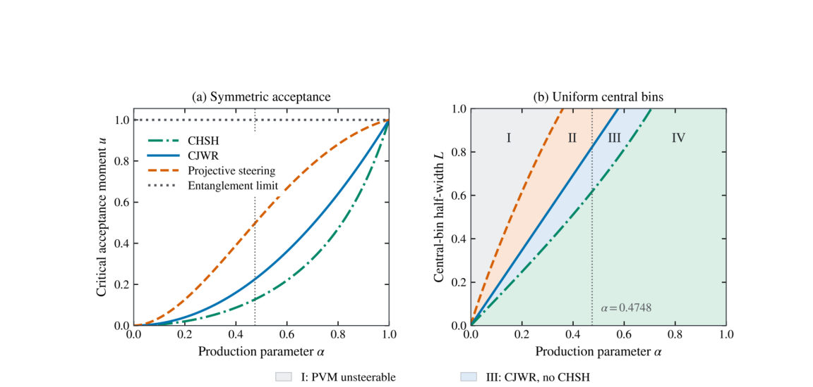
<figcaption class="paper-figure-caption"><b>Fig 3.</b> Fig. 2 Hierarchy of symmetrically averaged states on the positive production branch. Panel (a) compares the CHSH, CJWR, exact projective- steering, and entanglement boundaries in the acceptance moment 𝑢. Panel (b) shows uniform central bins, 𝑢= 𝐿2/3 ≤1/3. Regions I–IV distinguish projective unsteerability, projective steering without CJWR violation, CJWR violation without CHSH violation, and CHSH violation. PVM denotes a projective measurement. The endpoint 𝐿= 0 is the zero-yield limit. The vertical dotted line marks 𝛼= 0.4748; at 𝛼= 0 , the averaged states are separable.</figcaption>
</figure>
<figure class="paper-figure-card">
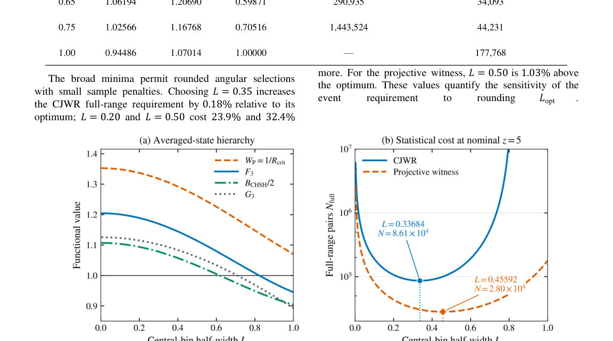
<figcaption class="paper-figure-caption"><b>Fig 4.</b> Fig. 3 Averaged-state witnesses and statistical cost. Panel (a) compares the projective functional, CJWR, fixed-triad witness, and one half of the maximal CHSH value, each with threshold one. Panel (b) gives the full-range pair requirement for the fixed linear witnesses at nominal 𝑧= 5. Dotted lines mark the separately optimized widths. The projective criterion detects steering through 𝐿= 1; the CJWR cost curve ends at its violation boundary.</figcaption>
</figure>
<figure class="paper-figure-card">
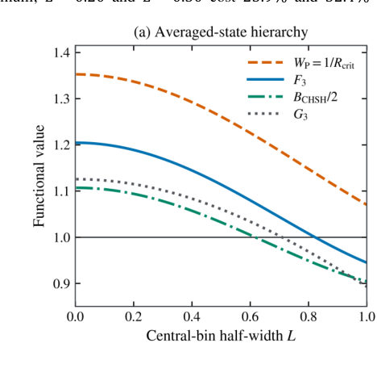
<figcaption class="paper-figure-caption"><b>Fig 5.</b> Figure 4 scans the production parameter 𝛼 with fixed analyzing powers. The black trajectories give the optimal central widths. The surfaces show how weaker production correlations raise the event requirement and how the</figcaption>
</figure>
</div>

<p><strong>Summary.</strong> This work rigorously analyzes quantum steering in hyperon-antihyperon pair production, establishing an exact boundary for nonclassical spin correlations. By developing and optimizing a projective witness, the authors demonstrate a substantial reduction (67.4%) in the required experimental sample size compared to previous methods. This advances the field by providing a more sensitive diagnostic tool for quantum correlations in particle decays.</p>
<p><strong>Why it may be interesting.</strong> It provides a rigorous, quantitative method for testing nonclassical correlations (steering) in a particle physics context, offering a significant improvement in experimental sensitivity over established bounds.</p>
<details>
<summary>Detailed structure</summary>
<p><strong>Main problem.</strong> The paper determines the exact projective-steering boundary for quantum correlations in angularly averaged hyperon-antihyperon states and optimizes angular selections to minimize the required experimental sample size.</p>
<p><strong>Main result.</strong> The exact projective-steering boundary is found, revealing a region missed by previous criteria, and optimizing the angular window reduces the required sample size by 67.4% compared to the CJWR criterion.</p>
<p><strong>Method.</strong> The analysis uses necessary and sufficient criteria for steering under projective measurements, deriving fixed linear witnesses, and employing statistical methods to optimize angular acceptance windows.</p>
<p><strong>Model / system.</strong> The system involves hyperon-antihyperon pair production via electron-positron annihilation, where quantum correlations are analyzed through the angular distribution of weak decays.</p>
<p><strong>Key observables.</strong> Quantum steering, Bell-diagonal states, covariance of weak-decay angular moments, and the required pair sample size ($N$).</p>
<p><strong>Important parameters / regimes.</strong> The production parameter $\alpha$, the acceptance window $B$, and the statistical significance $z$.</p>
<p><strong>Assumptions / limitations.</strong> The analysis assumes specific production-frame spin conventions and relies on reconstructing the spin density matrix from weighted decay-angle moments.</p>
<p><strong>Figures summary.</strong> Figure 1 compares pointwise witnesses and angular boundaries for different production parameters; Figure 2 shows the hierarchy of nonlocality witnesses (CHSH, CJWR, $W_P$); Figure 3 compares the statistical cost (sample size) for different witnesses.</p>
<p><strong>Paper structure.</strong> The paper progresses from defining the physical problem (steering in hyperon decays) to deriving the exact mathematical boundary using projective measurements, comparing this to existing criteria, and finally performing a statistical optimization to quantify the experimental advantage of the new witness.</p>
</details>
<details>
<summary>Abstract</summary>
<p>In hyperon-antihyperon production through electron-positron annihilation, quantum steering provides a stricter test of nonclassical spin correlations than entanglement. We determine when steering survives angular averaging and optimize angular selections to reduce the sample size needed to resolve it. In the specified production-frame spin convention, we show that windows symmetric about 90 degrees with even production-angle acceptance yield phase-independent Bell-diagonal states. Applying the necessary and sufficient criterion for steering under arbitrary dichotomic projective measurements determines the exact boundary for this family and reveals a steering region missed by the three-setting Cavalcanti-Jones-Wiseman-Reid (CJWR) criterion. For positive production parameters and uniform full-range acceptance, the steering threshold is $α\simeq0.36065$. We derive the covariance of weak-decay angular moments, construct fixed linear witnesses, and optimize the angular window. For $J/ψ\toΛ\barΛ$, steering survives full-range averaging. The statistical model predicts that, after separately optimizing the two angular selections at nominal $z=5$, the required full-range pair sample decreases from $8.61\times10^4$ for CJWR to $2.80\times10^4$ for the projective witness, a 67.4% reduction. This advantage persists under the production-acceptance and analyzing-power variations studied.</p>
</details>
<p><sub><a href="#top">↑ back to top</a></sub></p>

<p><a id="paper-2610.25102"></a></p>
<h3 id="large-exchange-bias-from-coupled-antiferromagnetic-order-and-glassy-magnetic-freezing-in-math776math"><a href="http://arxiv.org/abs/2610.25102v1">Large exchange bias from coupled antiferromagnetic order and glassy magnetic freezing in $Co_{0.36}NbS_{2}$</a></h3>
<p><strong>Authors:</strong> Suman Mondal, Himadri Roy Dakua, Raz Luger, Muntaser Naamneh, Eran Maniv<br>
<strong>Type:</strong> experiment · <strong>Category:</strong> disordered systems and neural networks · <strong>PDF:</strong> <a href="https://arxiv.org/pdf/2610.25102v1">https://arxiv.org/pdf/2610.25102v1</a><br>
<strong>Analysis basis:</strong> full PDF text, analyzed in chunks
<strong>Topic relevance:</strong> <code>analog quantum simulation</code> <strong>3/5</strong></p>
<div class="figure-strip-hint">↔ Scroll figures horizontally</div>
<div class="paper-figures-scroll">
<figure class="paper-figure-card">
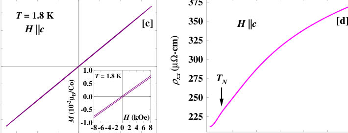
<figcaption class="paper-figure-caption"><b>Fig 1.</b> FIG. 1. Magnetic and transport characterization of Co0.36NbS2. (a) Temperature dependence of the magnetization measured in zero-field-cooled heating (ZFCH) and field-cooled (FC) protocols for H = 100 Oe applied along the c axis. The cusp near TN ≈26 K marks the AFM transition, while the ZFCH/FC bifurcation indicates thermomagnetic irreversibility. (b) Molar susceptibility, χmol = M/H, obtained after converting the measured magnetization to molar units. The red curve is a Curie–Weiss fit using χ = χ0 + C/(T −θP ) over the range 100–340 K. (c) Zero-field-cooled M(H) loop measured at 1.8 K in the field range ±70 kOe. The inset enlarges the low-field region, showing a small hysteretic component...</figcaption>
</figure>
<figure class="paper-figure-card">
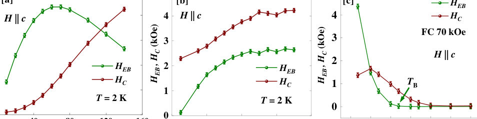
<figcaption class="paper-figure-caption"><b>Fig 2.</b> FIG. 3. Field-protocol and temperature dependence of the EB response. (a) EB field |HEB| and coercive field HC as a function of the field-sweep range HFS, measured at 2 K with H ∥c. In this protocol, the cooling field was set equal to the sweep field, Hcool = HFS. (b) Cooling-field dependence of |HEB| and HC at 2 K, measured using a fixed maximum field-sweep range of ±140 kOe. (c) Temperature dependence of |HEB| and HC after field cooling in 70 kOe and measuring loops with a ±70 kOe sweep range. The EB vanishes near the blocking temperature TB ≈12 K, while HC becomes small on approaching TN. Error bars represent the uncertainty estimated from the magnetic-field step size.</figcaption>
</figure>
<figure class="paper-figure-card">
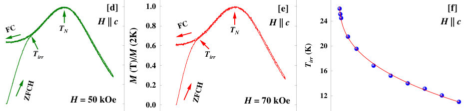
<figcaption class="paper-figure-caption"><b>Fig 3.</b> FIG. 4. Field dependence of magnetic irreversibility. (a)-(e) Normalized magnetization, M(T)/MFC(2 K), measured in ZFCH and FC protocols for different applied fields with H ∥c. The cusp near TN marks the AFM transition, while Tirr is defined operationally as the temperature at which the ZFCH and FC curves bifurcate. (f) Field dependence of Tirr. The solid red line is a fit to Eq. (2), giving ϕ = 5.54 ± 0.29.</figcaption>
</figure>
<figure class="paper-figure-card">
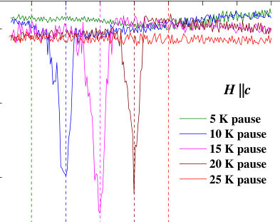
<figcaption class="paper-figure-caption"><b>Fig 4.</b> FIG. 5. ZFC aging-memory response of Co0.36NbS2. The sample was cooled in zero field with a one-hour wait- ing time at selected temperatures Tw, then cooled to base temperature. Magnetization was measured on warming in H = 1 kOe and compared with a reference curve measured without a waiting step. The plotted difference, ∆M(T) = Maged(T) −Mref(T), shows memory dips near the waiting temperatures, most clearly for Tw = 10, 15, and 20 K. The dips indicate that the system retains memory of the aging temperature, consistent with slow glassy magnetic dynamics.</figcaption>
</figure>
<figure class="paper-figure-card">
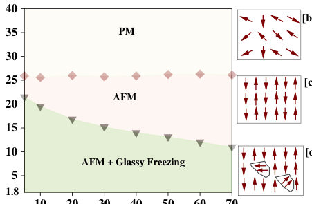
<figcaption class="paper-figure-caption"><b>Fig 5.</b> FIG. 6. Magnetic phase diagram and schematic exchange-bias mechanism. (a) Magnetic field- temperature phase diagram for Co0.36NbS2 with H ∥c. The upper boundary marks the AFM transition near TN, while the lower boundary follows the irreversibility tempera- ture Tirr extracted from the ZFCH/FC bifurcation. Symbols indicate experimentally determined Tirr values; shaded regions are guides to the eye. (b)-(d) Phenomenological schematic of the proposed field-cooling mechanism. Frozen uncompensated moments associated with Co-rich or disor- dered regions couple to the AFM background and generate a unidirectional anisotropy after field cooling. The schematic does not imply direct microscopic...</figcaption>
</figure>
</div>

<p><strong>Summary.</strong> This experimental study characterizes the large exchange bias observed in Co0.36NbS2, a material exhibiting both antiferromagnetic order and glassy magnetic freezing. The authors propose that the EB arises from the exchange coupling between the AFM background and disorder-induced, pinned uncompensated magnetic moments. This work expands the understanding of EB mechanisms beyond simple heterostructures by incorporating glassy dynamics.</p>
<p><strong>Why it may be interesting.</strong> The interplay between long-range order (AFM) and quenched disorder (glassy freezing) is a canonical problem in condensed matter physics, relevant to understanding complex magnetic ground states and frustration.</p>
<details>
<summary>Detailed structure</summary>
<p><strong>Main problem.</strong> The study investigates the origin and mechanism of large exchange bias (EB) in a material where magnetic ordering is coupled with glassy magnetic freezing.</p>
<p><strong>Main result.</strong> The large EB effect is attributed to the exchange coupling between long-range antiferromagnetic (AFM) order and disorder-induced, glassy frozen uncompensated magnetic moments.</p>
<p><strong>Method.</strong> Magnetization measurements (M(H) loops) were performed using Zero-Field-Cooled (ZFCH) and Field-Cooled (FC) protocols, along with temperature-dependent measurements.</p>
<p><strong>Model / system.</strong> The physical system is single-crystalline Co0.36NbS2, an intercalated transition-metal dichalcogenide exhibiting both AFM order (T_N ~ 26 K) and glassy freezing below a blocking temperature (T_B ~ 12 K).</p>
<p><strong>Key observables.</strong> Exchange bias shift (|HEB| ~ 4.4 kOe), AFM transition temperature (T_N), blocking temperature (T_B), and the temperature dependence of irreversibility (T_irr).</p>
<p><strong>Important parameters / regimes.</strong> The EB magnitude is sensitive to the field-cooling and field-sweep protocols, and the coupling is confirmed by the vanishing of EB below T_B.</p>
<p><strong>Assumptions / limitations.</strong> The primary assumption is that the EB arises from the coupling between the established AFM matrix and a history-dependent, glassy component of magnetic moments.</p>
<p><strong>Figures summary.</strong> Figures illustrate M(T) and M(H) loops showing the AFM transition and the EB shift. Phase diagrams map the coexistence of AFM and glassy regimes, and schematics detail the field-cooling mechanism.</p>
<p><strong>Paper structure.</strong> The paper systematically measures magnetic properties (M(T), M(H)) across various field protocols to characterize the coexistence of AFM order and glassy freezing, culminating in a proposed model for the EB mechanism.</p>
</details>
<details>
<summary>Abstract</summary>
<p>Magnetization measurements on single-crystalline $Co_{0.36}NbS_{2}$ reveal antiferromagnetic order near $T_{N} \simeq 26 K$ and a lower-temperature history-dependent magnetic response consistent with glassy freezing of a subset of magnetic moments. After field cooling, $M(H)$ loops exhibit a sizable exchange-bias shift, reaching $|H_{EB}| \simeq 4.4 kOe$ at $1.8 K$ for a $70 kOe$ field-cooling sweep protocol. The training effect, field-sweep and cooling-field protocol dependence, and disappearance of the bias near a blocking temperature $T_{B} \simeq 12 K$, well below $T_{N}$, support an interpretation in which frozen uncompensated moments are exchange-coupled to an antiferromagnetic matrix. These results suggest that antiferromagnetic-glassy-moment coupling may provide a broader route to exchange bias in off-stoichiometric magnetic $NbS_{2}$ intercalates.</p>
</details>
<p><sub><a href="#top">↑ back to top</a></sub></p>

<p><a id="paper-2610.26689"></a></p>
<h3 id="measurement-efficient-energy-estimator-for-quantum-chemistry-of-photodynamic-materials"><a href="http://arxiv.org/abs/2610.26689v1">Measurement-efficient energy estimator for quantum chemistry of photodynamic materials</a></h3>
<p><strong>Authors:</strong> Connor Lenihan, Kripa Panchagnula, Luca Erhart, Jem Guhit, Carlo A. Gaggioli, Gabriel Greene-Diniz, Gabriel Laude, Megan Cerys Rowe, Fabian Finger, Pranav Kalidindi, Enrico Rinaldi, Mikko Muuronen, Chandrika Mulakala, Thomas M. Soini, Elvira Shishenina, David Muñoz Ramo, David Zsolt Manrique<br>
<strong>Type:</strong> both · <strong>Category:</strong> quantum information and computing · <strong>PDF:</strong> <a href="https://arxiv.org/pdf/2610.26689v1">https://arxiv.org/pdf/2610.26689v1</a><br>
<strong>Analysis basis:</strong> full PDF text, analyzed in chunks
<strong>Topic relevance:</strong> <code>quantum measurements</code> <strong>3/5</strong></p>
<div class="figure-strip-hint">↔ Scroll figures horizontally</div>
<div class="paper-figures-scroll">
<figure class="paper-figure-card">
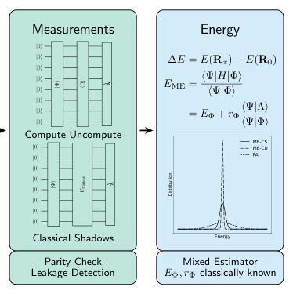
<figcaption class="paper-figure-caption"><b>Fig 1.</b> Fig. 1 End-to-end workflow from chemical modelling to precise energy differences, illustrated here for an H2DBB–Ru molecular model extracted from the Hf–DBB–Ru framework. Classical calculations define the relevant geometries and AS Hamiltonians. A quantum state-preparation method provides a target eigenstate or approximation, here we use a variant of tUPS: pp-tUPS optimized by statevector VQE; and sparse multiconfiguration states. Direct measurements of overlaps with classically con- structed sparse reference and residual states, particularly compute–uncompute, reduce sampling cost and variance relative to Pauli averaging. The mixed estimator combines these overlaps with classically known...</figcaption>
</figure>
<figure class="paper-figure-card">
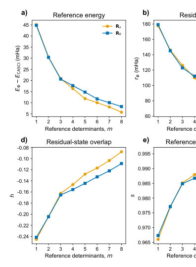
<figcaption class="paper-figure-caption"><b>Fig 2.</b> Fig. 2 Exact ME quantities for the triplet-spin ground states of the two (6,6) AS Hamiltonians corresponding to the Rx and R0 geometries. For each m, the reference is obtained by diagonalizing the Hamiltonian in the subspace of the m largest-amplitude CASCI determinants, from which the corresponding normalized residual state is constructed. a, Reference-energy error EΦ −ECASCI. b, Residual norm rΦ = ∥QΦH |Φ⟩∥. c, Energy correction rΦh/s. d, Residual-state overlap h = ⟨Ψ|Λ⟩. e, Reference-state overlap s = ⟨Ψ|Φ⟩. f, Ratio of the two overlaps.</figcaption>
</figure>
<figure class="paper-figure-card">
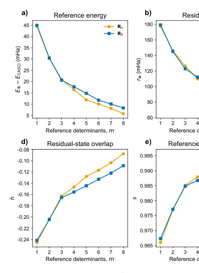
<figcaption class="paper-figure-caption"><b>Fig 3.</b> Figure 3 compares the direct expectation value and the mixed estimator using the same sequence of approximate target states for all three active spaces. For pp-tUPS, two layers place both estimators within the ±1.6 mHa interval for both geometries. For sMCS, the mixed estimator generally approaches the CASCI energies with fewer retained determinants than the direct expectation value, with the clearest separation in the larger ASs. Because the state is not exact in this test and the mixed estimator is non-variational, it is not guaranteed to converge monotonically or to be closer at every truncation. The result, however, demonstrates that the mixed estimator can reduce the target-state...</figcaption>
</figure>
<figure class="paper-figure-card">
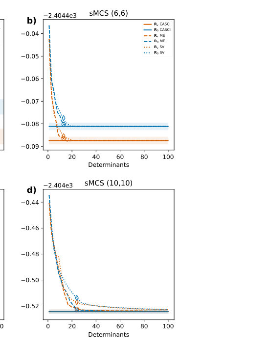
<figcaption class="paper-figure-caption"><b>Fig 4.</b> Fig. 3 Statevector energy convergence of mixed estimator and expectation value for the approximate target states: a) pp-tUPS targets in the (6,6) active space. b)–d), sMCS targets in the (6,6), (8,8), and (10,10) active spaces. Dashed and dotted curves correspond to ME and direct EV values, with solid lines marking the CASCI energy, and the shaded region marking ECASCI ± 1.6 mHa. Orange and blue correspond to the Rx and R0 geometries. Scatter markers for sMCS indicate the truncations used for emulator and hardware runs as defined by Eq. (5).</figcaption>
</figure>
<figure class="paper-figure-card">
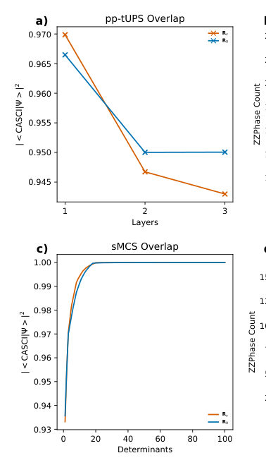
<figcaption class="paper-figure-caption"><b>Fig 5.</b> Fig. 4 State-preparation quality and circuit resources for the (6,6) active space. a), b) indicate the overlap of the CASCI and pp-tUPS state, alongside the two-qubit pp-tUPS resources. By definition of the ansatz (fig. 9), resources for both geometries are identical. c), d) are analogous for the sMCS states. Orange and blue correspond to the Rx and R0 geometries. pp-tUPS resources for both states are identical; a feature of the ansatz with two-qubit gate count as hexagons and depth as octagons. sMCS gate count is shown as a solid line, with dotted corresponding to depth.</figcaption>
</figure>
</div>

<p><strong>Summary.</strong> This paper introduces a measurement-efficient mixed estimator to calculate correlated energy differences for challenging quantum chemistry problems relevant to photodynamic materials. By combining quantum-prepared target states with classical references, the method drastically reduces the required quantum measurement shots compared to standard techniques. The approach is validated on a complex molecular model and tested on trapped-ion quantum hardware.</p>
<p><strong>Why it may be interesting.</strong> The development of measurement-efficient estimators directly addresses the resource bottleneck in applying quantum computing to complex molecular simulations, bridging quantum information theory with physical chemistry.</p>
<details>
<summary>Detailed structure</summary>
<p><strong>Main problem.</strong> Accurately determining correlated energy differences for quantum chemistry, which is crucial for modeling chemical reaction rates in photodynamic and radiodynamic therapies.</p>
<p><strong>Main result.</strong> The proposed mixed estimator achieves predicted precision of 1.6 mHa with significantly fewer quantum shots compared to single-determinant or Hamiltonian-term sampling methods.</p>
<p><strong>Method.</strong> The authors developed and applied a measurement-efficient mixed estimator (EME) that combines a quantum-prepared target state with sparse multiconfiguration references to estimate electronic energies.</p>
<p><strong>Model / system.</strong> The study uses the H2DBB--Ru molecular model, derived from a Ru-functionalized hafnium metal-organic framework, which serves as a challenging benchmark for electronic structure calculations.</p>
<p><strong>Key observables.</strong> Electronic energy differences (activation energy, $\Delta E$), overlap terms ($\langle\Psi|\Lambda
angle$, $\langle\Psi|\Phi
angle$), and required quantum circuit resources (qubit count, depth).</p>
<p><strong>Important parameters / regimes.</strong> Target precision of 1.6 mHa; comparison across active spaces up to (10,10); comparison against CASCI benchmarks.</p>
<p><strong>Assumptions / limitations.</strong> The method assumes the ability to classically obtain the reference state $|\Phi
angle$ and resolves sign ambiguities by assuming the target state is the ground state.</p>
<p><strong>Figures summary.</strong> Figure 1 illustrates the end-to-end workflow, integrating classical calculations, quantum state preparation (pp-tUPS/sMCS), direct overlap measurements, and the final mixed estimator calculation.</p>
<p><strong>Paper structure.</strong> The paper details the theoretical formulation of the mixed estimator, benchmarks it against established quantum chemistry methods using the H2DBB--Ru system, and validates the approach using both emulator and trapped-ion experiments on Quantinuum Helios.</p>
</details>
<details>
<summary>Abstract</summary>
<p>Accurate modelling of chemical reaction rates requires precise correlated energy differences. Quantum computing offers a potential route to their determination, but extracting energies from quantum-prepared states can demand prohibitive sampling. We demonstrate measurement-efficient correlated energy estimation using an electronically challenging H$_2$DBB--Ru model derived from a Ru-functionalized hafnium metal-organic framework relevant to radiodynamic and photodynamic therapies. The mixed estimator combines a quantum-prepared target with sparse multiconfiguration references and recovers ground-state corrections using magnitude-only compute-uncompute measurements. Analytical variance estimates predict 1.6 mHa precision with a few hundred shots, about 100 times fewer than the single-determinant formulation and three orders of magnitude fewer than optimized Hamiltonian-term sampling. With approximate targets, it reaches comparable accuracy using simpler state preparation than direct expectation-value estimation. Emulator and trapped-ion experiments on Quantinuum Helios validate the approach up to (10,10), including a 50-qubit circuit combining AI-assisted state preparation with error detection, providing a measurement-efficient route to correlated energy differences for challenging chemical problems.</p>
</details>
<p><sub><a href="#top">↑ back to top</a></sub></p>

<p><a id="paper-2610.24071"></a></p>
<h3 id="monolayer-van-der-waals-kagome-lattice-for-high-temperature-flat-band-physics"><a href="http://arxiv.org/abs/2610.24071v1">Monolayer van der Waals kagome lattice for high-temperature flat-band physics</a></h3>
<p><strong>Authors:</strong> Hyungkun Bong, Choongjae Won, Seongyong Lee, Soomin Oh, Phuong X. Nguyen, Raghav Chaturvedi, Sehyun Oh, Jiyong Han, Paul Malinowski, Chad Mowers, Jimin Kim, Sae Hee Ryu, Hyunjong Lee, Jinhyeok Choi, Sangsu Yer, Chris Jozwiak, Aaron Bostwick, Eli Rotenberg, Craig M. Polley, Matthew D. Watson, Timur K. Kim, Heejun Yang, Jieun Lee, Kin Fai Mak, Jie Shan, Jae-Hoon Park, Gil Young Cho, Kyle M. Shen, Mingu Kang<br>
<strong>Type:</strong> both · <strong>Category:</strong> strongly correlated electrons · <strong>PDF:</strong> <a href="https://arxiv.org/pdf/2610.24071v1">https://arxiv.org/pdf/2610.24071v1</a><br>
<strong>Analysis basis:</strong> full PDF text, analyzed in chunks
<strong>Topic relevance:</strong> <code>analog quantum simulation</code> <strong>3/5</strong></p>
<div class="figure-strip-hint">↔ Scroll figures horizontally</div>
<div class="paper-figures-scroll">
<figure class="paper-figure-card">
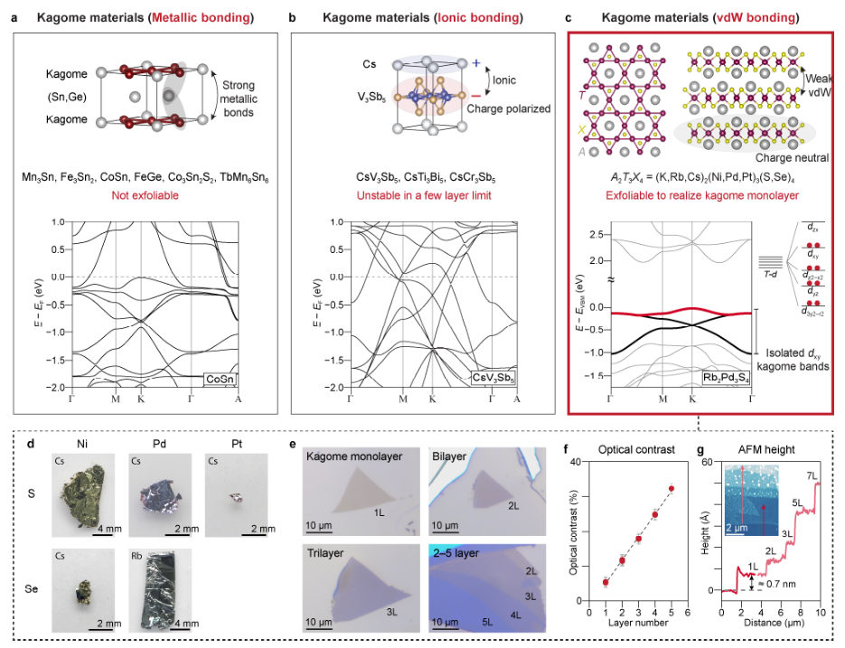
<figcaption class="paper-figure-caption"><b>Fig 1.</b> Figure 1 | vdW kagome materials family A2T3X4 as a new class of 2D flat band system. a–c, Classification of kagome lattice materials based on type of interlayer bonding: metallic (a), ionic (b), and vdW (c). The vdW kagome family A2T3X4 not only offers an ideal opportunity to realize true 2D monolayer kagome lattices, but also hosts an isolated kagome flat band at the valence band maximum (EVBM). d, Bulk crystals of A2T3X4. e, Realization of the 2D kagome lattices by mechanical exfoliation of Cs2Pd3S4 down to the monolayer limit. f,g, Optical contrast and atomic force microscopy measurements on exfoliated Cs2Pd3S4, confirming single-layer thickness. The inset in g displays an atomic force...</figcaption>
</figure>
<figure class="paper-figure-card">
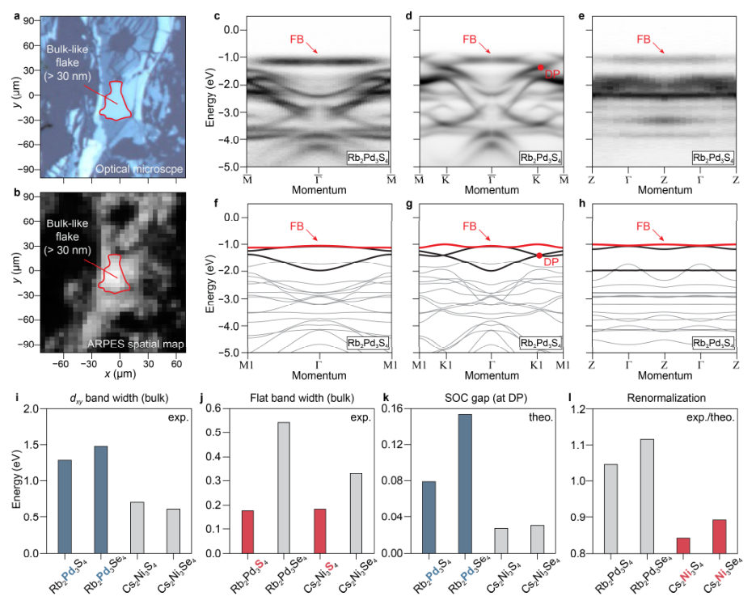
<figcaption class="paper-figure-caption"><b>Fig 2.</b> Figure 2 | Bulk electronic structure of the vdW kagome series A2T3X4. a, Optical microscope image of exfoliated A2T3X4 flakes on conducting substrate. Among the exfoliated flakes, we selected a thick-enough flake (&gt; 30 nm) to obtain bulk electronic structure of A2T3X4. Compared to conventional ARPES measurements on cleaved bulk crystals, this approach reduces sample charging, yielding substantially higher ARPES spectrum quality. b, Corresponding ARPES spatial map visualizing the exfoliated flakes in situ. c,d, ARPES spectra of Rb2Pd3S4 measured along Γ–M and Γ–K high-symmetry surface Brillouin zone directions, respectively. For comparison, the corresponding DFT band structures along...</figcaption>
</figure>
<figure class="paper-figure-card">
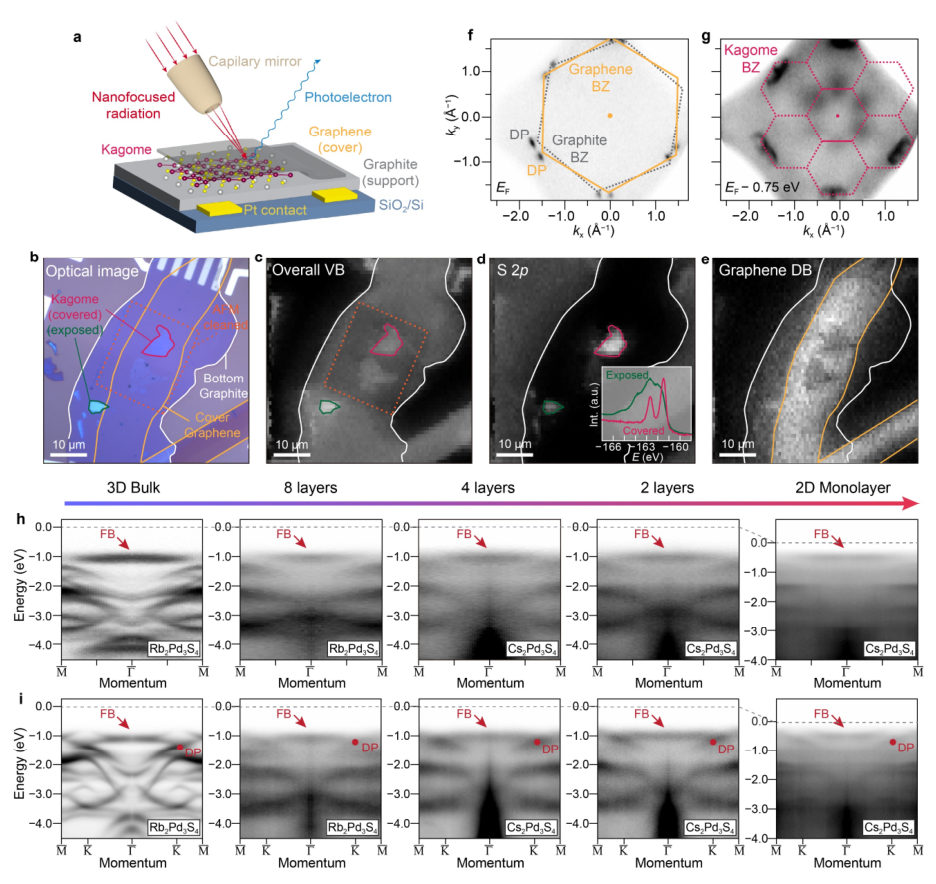
<figcaption class="paper-figure-caption"><b>Fig 3.</b> Figure 3 | Electronic structure of 2D A2Pd3S4 measured by nano-ARPES. a, Schematics of the graphene/A2Pd3S4/graphite vdW heterotrilayer prepared for nano-ARPES measurements. b, Optical image of a representative heterotrilayer device. c–e, Spatial mappings of photoelectron intensities using the valence band photocurrents (c), S-2p core levels (d), and graphene Dirac bands (e), respectively. These mappings offer in situ visualization of bottom graphite, A2Pd3S4 flakes, and top graphene, respectively, as marked with white, magenta, and yellow solid lines. Green solid lines mark an additional A2Pd3S4 flake on our device not covered by graphene, while orange-dashed lines indicate a surface...</figcaption>
</figure>
<figure class="paper-figure-card">
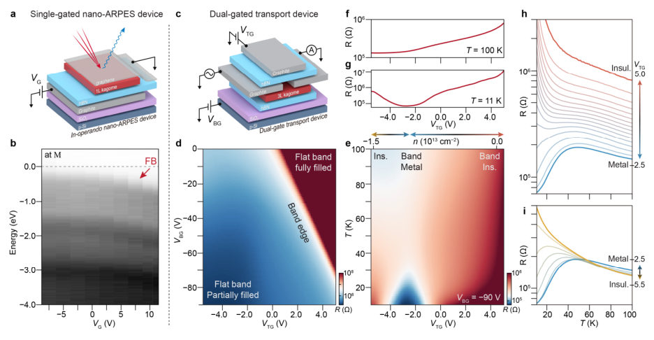
<figcaption class="paper-figure-caption"><b>Fig 4.</b> Figure 4 | Gate-engineering and access to the partially filled kagome flat band states in 2D A2T3X4. a, Schematic illustration of the single-gated A2T3X4 field effect device used for in operando nano-ARPES measurements. The device is composed of [cover graphene / monolayer Cs2Pd3S4 / hBN/graphite bottom gate]. b, Gate-dependent evolution of energy distribution curves measured at the M point, spectroscopically visualizing the gate-tunability of the kagome flat band. c, Schematic illustration of the dual-gated A2T3X4 field effect device used to measure two-terminal transport. The device consists of [graphite/hBN top gate / graphite electrodes / trilayer Rb2Pd3Se4 / SiO2/Si bottom gate]. d,...</figcaption>
</figure>
<figure class="paper-figure-card">

<figcaption class="paper-figure-caption"><b>Fig 5.</b> Figure 5 | Potential for high-temperature flat band phenomena in 2D A2T3X4. a–c, Comparison between characteristic energy scales in 2D vdW kagome system (A2Pd3S4) and Moiré superlattice system (twisted bilayer MoTe2). The latter is adopted from Ref. 42. Flat bands in kagome lattice hosts two orders of magnitude higher flat band electron density (n) compared to Moiré systems and, consequently, enhanced energy and temperature scales. d,e, Electronic structure of monolayer Rb2Pd3S4 without (d) and with (e) spin-orbit coupling. f, Mean- field phase diagram of monolayer Rb2Pd3S4 at partial fillings of the flat band. A cascade of strongly correlated phases emerges in different parameter regimes,...</figcaption>
</figure>
</div>

<p><strong>Summary.</strong> This work introduces the $ ext{A}_2    ext{T}_3    ext{X}_4$ van der Waals family as the first ideal 2D material for studying kagome physics. By combining nano-ARPES and theory, the authors confirm the existence of a highly dense, intrinsic flat band. This platform promises to enable the study of correlated topological states, such as the FQAH state, at significantly higher temperatures than previously achieved.</p>
<p><strong>Why it may be interesting.</strong> The realization of a high-density, intrinsic 2D flat band platform fundamentally changes the landscape for studying correlated topological states, offering a superior alternative to current Moiré-based systems for high-temperature physics.</p>
<details>
<summary>Detailed structure</summary>
<p><strong>Main problem.</strong> The primary goal is to establish and study ideal two-dimensional (2D) kagome lattices to unlock novel quantum phenomena inaccessible in bulk 3D systems.</p>
<p><strong>Main result.</strong> The $  ext{A}_2    ext{T}_3    ext{X}_4$ vdW family provides the first ideal 2D platform, exhibiting an intrinsic, highly dense flat band that can host high-temperature correlated states like the FQAH state.</p>
<p><strong>Method.</strong> The work combines experimental characterization using nano-ARPES with theoretical predictions from DFT and many-body calculations.</p>
<p><strong>Model / system.</strong> The system is the van der Waals (vdW) kagome lattice $  ext{A}_2    ext{T}_3    ext{X}_4$, which is synthesized and exfoliated into a true 2D monolayer limit. This structure is compared to Moiré systems and modeled using tight-binding Hamiltonians.</p>
<p><strong>Key observables.</strong> Isolated kagome-derived flat band, fractional quantum anomalous Hall state (FQAH) gap ($\approx 14–29 	ext{ meV}$), and high flat band electron density ($    ext{n} \approx 1.0  ext{ nm}^{-2}$).</p>
<p><strong>Important parameters / regimes.</strong> The flat band electron density is $>220$ times higher than Moiré systems, and the physics is predicted to be stable at higher temperatures.</p>
<p><strong>Assumptions / limitations.</strong> The vdW nature allows for clean exfoliation and the electronic structure is assumed to be dominated by the $d_{xy}$ orbitals forming the kagome network.</p>
<p><strong>Figures summary.</strong> Figures illustrate the ideal 2D kagome dispersion, show optical images of exfoliated flakes, and present ARPES spectra confirming the flat band and Dirac points, alongside theoretical calculations of many-body spectra and Chern band analysis.</p>
<p><strong>Paper structure.</strong> The paper progresses from establishing the need for 2D kagome systems, to identifying the $    ext{A}_2    ext{T}_3    ext{X}_4$ material family, characterizing the intrinsic flat band via ARPES, and finally using many-body theory to predict and confirm the existence of high-temperature correlated states like the FQAH state.</p>
</details>
<details>
<summary>Abstract</summary>
<p>Kagome lattice materials host a remarkably rich landscape of novel quantum phenomena, all arising from the intrinsic interplay of topology, correlation, and frustration. While previous studies have been mostly limited to bulk three-dimensional (3D) kagome crystals, the realization of a true two-dimensional (2D) kagome system has remained a long-standing goal, to unlock fundamentally new physics and engineering pathways inaccessible in 3D systems. In this work, we establish the first ideal 2D monolayer kagome lattices by leveraging a novel and versatile van der Waals (vdW) kagome family, A2T3X4 (A = K, Rb, Cs; T = Ni, Pd, Pt; X = S, Se). Our nano-focused angle-resolved photoemission spectroscopy (nano-ARPES) directly characterizes the electronic structure of A2T3X4 down to the monolayer limit, notably revealing an isolated kagome-derived flat band just below the Fermi level. Via gate-engineering of 2D A2T3X4, the kagome flat band can be further tuned to the Fermi level, allowing direct access to the partially filled flat band physics and establishing a qualitatively new 2D flat band platform. Compared to existing moire-based artificial flat band systems, this vdW kagome-based intrinsic flat band system realizes more than 220 times higher flat band electron density, opening an entirely new density and energy regime for exploring 2D flat band physics. Harnessing this high-electron-density flat band in 2D vdW kagome system provides a clear pathway to scale emergent flat band phenomena - such as fractional quantum anomalous Hall states - to far higher temperatures than currently achievable, as long-envisioned in theory and further supported by our many-body calculations.</p>
</details>
<p><sub><a href="#top">↑ back to top</a></sub></p>

<p><a id="paper-2610.25412"></a></p>
<h3 id="near-self-duality-and-spatial-reorganization-of-anyon-vortex-lattices"><a href="http://arxiv.org/abs/2610.25412v1">Near self-duality and spatial reorganization of anyon vortex lattices</a></h3>
<p><strong>Authors:</strong> Bao-Duy Le<br>
<strong>Type:</strong> theory · <strong>Category:</strong> quantum gases · <strong>PDF:</strong> <a href="https://arxiv.org/pdf/2610.25412v1">https://arxiv.org/pdf/2610.25412v1</a><br>
<strong>Analysis basis:</strong> full PDF text, analyzed in chunks
<strong>Topic relevance:</strong> <code>analog quantum simulation</code> <strong>3/5</strong></p>
<div class="figure-strip-hint">↔ Scroll figures horizontally</div>
<div class="paper-figures-scroll">
<figure class="paper-figure-card">

<figcaption class="paper-figure-caption"><b>Fig 1.</b> FIG. 1. Density across the interaction axis at β = 61: strong attraction, zero contact coupling, and repulsion, from left to right. Coordinates are divided by the root-mean-square radius √</figcaption>
</figure>
<figure class="paper-figure-card">

<figcaption class="paper-figure-caption"><b>Fig 2.</b> FIG. 2. Integrated attractive response. (a) Relative magnetic defect δ versus distance ϵ from the established stability line. (b) The defect relative to the remaining positive quartic coefficient, η = δ/ϵ, expressed as a percentage. Lines connect computed states; open symbols mark states above the stationarity criterion, Eq. (26). A small magnetic defect can remain a percent-level correction to the residual energy near the boundary.</figcaption>
</figure>
<figure class="paper-figure-card">

<figcaption class="paper-figure-caption"><b>Fig 3.</b> FIG. 3. Squared energy and contact-response consistency. (a) Near-boundary E2/β with fits to the three closest accepted points and the rigorous lower-bound reference. (b) Relative mismatch 100Ri between the squared-energy increment and the trapezoidal integral of the density-shape factor on every neighboring attractive interval. Midpoints are geometric in ϵ. Open symbols mark states, or intervals with an endpoint, above the stationarity criterion. No derivative smoothing or fitted correction is used.</figcaption>
</figure>
<figure class="paper-figure-card">

<figcaption class="paper-figure-caption"><b>Fig 4.</b> FIG. 4. Spatial organization of the self-duality defect at β = 61. (a)–(c) Probability-normalized defect density Pd/Q at zero coupling, moderate attraction, and the closest attractive state satisfying the stationarity criterion, with a shared logarithmic color scale. Dashed circles enclose 90% of particle mass. (d) Enclosed defect versus enclosed mass. (e) Defect outside a variable mass radius versus the corresponding outer mass fraction. Dotted diagonals indicate equal radial distributions of mass and defect. The relative outward bias becomes pronounced under strong attraction.</figcaption>
</figure>
<figure class="paper-figure-card">

<figcaption class="paper-figure-caption"><b>Fig 5.</b> FIG. 5. Peripheral enrichment across all 14 attractive β = 61 fields. (a) Fractions of the defect, covariant kinetic energy, amplitude-gradient energy, and quartic density outside the radius containing 90% of mass. The horizontal reference marks 10%. (b) Regional nonsaturation ℓΩ= (R</figcaption>
</figure>
</div>

<p><strong>Summary.</strong> This theoretical paper analyzes vortex lattices in a trapped anyon gas model to pinpoint where the system deviates from a state of self-duality. By using a specialized local defect measure, the authors show that the residual non-self-dual energy concentrates in a vortex-free outer shell. This reveals a crucial spatial mechanism governing the energy balance in these exotic quantum fluids.</p>
<p><strong>Why it may be interesting.</strong> This work provides detailed spatial diagnostics for topological order in synthetic quantum systems, offering insights into how local structure dictates global energy properties in strongly interacting quantum fluids.</p>
<details>
<summary>Detailed structure</summary>
<p><strong>Main problem.</strong> The study investigates the spatial distribution of the departure from self-duality in a trapped anyon vortex lattice as attractive interactions are increased.</p>
<p><strong>Main result.</strong> The residual defect concentrates in a vortex-free outer shell, resolving a spatial imbalance in the cancellation that produces near self-duality, which is not captured by integrated energy measures alone.</p>
<p><strong>Method.</strong> The authors use numerical computation of low-energy states and employ a positive, gauge-invariant local defect to measure the excess covariant kinetic energy.</p>
<p><strong>Model / system.</strong> The system is an effective model of a trapped anyon gas described by the almost-bosonic Chern–Simons–Schrödinger (CSS) average-field model. The energy functional involves kinetic, interaction, and potential energy terms.</p>
<p><strong>Key observables.</strong> Self-duality Defect ($\delta$), density modulation, covariant kinetic energy, and the local defect ($\delta$).</p>
<p><strong>Important parameters / regimes.</strong> Statistical flux ($eta$), attractive interaction strength ($G$), and the stability line ($G_c = -4\pieta$).</p>
<p><strong>Assumptions / limitations.</strong> The analysis uses an effective functional and is not a proof of a simultaneous many-body limit; results are robust to grid refinement.</p>
<p><strong>Figures summary.</strong> Figures illustrate the vortex-free edge at high flux, comparing the azimuthal flow ($ar{r}v_{	heta}$) and density decay rate ($-ar{r}\partial_r \log ar{s}$) to demonstrate local self-duality.</p>
<p><strong>Paper structure.</strong> The paper establishes the energy functional and key diagnostics (defect $\delta$, scale-invariant quantities $b_{sh}, \eta$), analyzes the effect of attractive interactions approaching the stability boundary, and finally pinpoints the spatial location of the residual defect in the outer shell.</p>
</details>
<details>
<summary>Abstract</summary>
<p>Contact attraction drives the self-generated vortex lattice of a trapped anyon gas towards self-duality, but integrated energies do not reveal where the remaining departure from it is located. We address this question in the almost-bosonic Chern--Simons--Schrödinger average-field model using a positive, gauge-invariant local defect that measures the covariant kinetic energy in excess of the magnetic bound. Numerically computed low-energy states at three statistical fluxes show that, as the stability line is approached, the integrated defect falls by about two orders of magnitude while the density modulation grows, so that magnetic saturation and density uniformity separate. The residual defect concentrates in a vortex-free outer shell that carries unscreened statistical flux. There it reduces to a smooth radial mismatch between the statistical flow and the density decay, which the interior lattice cannot cancel, whereas the covariant kinetic and amplitude-gradient energies show no comparable enrichment. The effect is robust to grid and box refinement, while its magnitude depends on flux and on the low-energy branch. Exact dilation and contact-response identities relate the squared energy to the density shape and provide consistency checks. Repulsion produces the opposite trend: a smoother density with a larger defect.</p>
</details>
<p><sub><a href="#top">↑ back to top</a></sub></p>

<p><a id="paper-2610.26319"></a></p>
<h3 id="squeezing-type-lower-bounds-on-generalized-metrological-sensitivity"><a href="http://arxiv.org/abs/2610.26319v1">Squeezing-type lower bounds on generalized metrological sensitivity</a></h3>
<p><strong>Authors:</strong> Irene García-Martínez, Manuel Gessner<br>
<strong>Type:</strong> theory · <strong>Category:</strong> quantum information and computing · <strong>PDF:</strong> <a href="https://arxiv.org/pdf/2610.26319v1">https://arxiv.org/pdf/2610.26319v1</a><br>
<strong>Analysis basis:</strong> full PDF text, analyzed in chunks
<strong>Topic relevance:</strong> <code>quantum measurements</code> <strong>3/5</strong></p>
<div class="figure-strip-hint">↔ Scroll figures horizontally</div>
<div class="paper-figures-scroll">
<figure class="paper-figure-card">

<figcaption class="paper-figure-caption"><b>Fig 1.</b> Figure 1. Single-copy squeezing-type sensitivities for a single qubit. We compare the Wineland (152), HCR (153), and Abel (159) squeez- ing sensitivities over λ ∈[−π, π] for Bloch-vector lengths (a) r = 0.3 and (b) r = 0.8. After optimizing over λ, the HCR and Abel sensi- tivities do not exceed the Wineland sensitivity for mixed states. As the state approaches the pure-state limit, the optimized HCR sensi- tivity converges to the Wineland result, whereas the Abel sensitivity remains lower for all values of r considered here. (c) This behavior can be traced back to the dependence of the optimal displacement λopt on r. (d) Above the critical value r = 0.77 obtained in Eq. (163), the optimal...</figcaption>
</figure>
<figure class="paper-figure-card">

<figcaption class="paper-figure-caption"><b>Fig 2.</b> Figure 2. Comparison between the squeezing sensitivities and the corresponding quantum information functions for m = 1 and m = 3 copies at fixed Bloch-vector length r = 0.6. Solid lines represent the squeezing-type sensitivities, while dashed lines represent the corre- sponding quantum information functions for different values of λ. In each panel, the state and observables appearing in the legend are understood as their corresponding m-copy forms. For a single copy, the hierarchy is saturated for all three constructions (a). For multi- ple copies, saturation is retained only in the standard Wineland–QFI case, while deviations arise for the HCR and Abel constructions. All quantities...</figcaption>
</figure>
<figure class="paper-figure-card">

<figcaption class="paper-figure-caption"><b>Fig 3.</b> Figure 4. Maximum normalized squeezing sensitivity as a function of the particle number N for the Wineland and Abel (1, 1) construc- tions at fixed entropy S 0 = 0.24. The white-noise fraction ϵ is ad- justed for each N according to S (ρ0) = S 0. Although ϵ decreases with increasing N, the metrological gain per particle reaches a maxi- mum and subsequently decreases, reflecting the competition between OAT-generated correlations, normalization by N, and noise sensitiv- ity.</figcaption>
</figure>
<figure class="paper-figure-card">

<figcaption class="paper-figure-caption"><b>Fig 4.</b> Figure 3. Single-copy squeezing parameters for S (ρ0) = S 0 = 0.240, corresponding to ϵ = 0.038 for N = 12 qubits. The standard Wineland parameter provides the largest sensitivity, while the Abel parameter exceeds the classical limit N (black dashed line) over a finite interval of OAT times (a). At early times, the HCR information function is minimized at λ = 0 and coincides with the QFI. Beyond a critical time, the minimum shifts to λ = λmax = 2π/3, producing the abrupt change in the HCR squeezing curve (b).</figcaption>
</figure>
</div>

<p><strong>Summary.</strong> This paper introduces generalized squeezing-type lower bounds that extend the standard Quantum Cramér-Rao Bound to a hierarchy of metrological sensitivities. By analyzing moment-based and test-observable constructions, the authors provide theoretically rigorous and experimentally accessible ways to characterize quantum estimation limits. This is vital for designing high-precision quantum sensors in both theoretical and physical systems.</p>
<p><strong>Why it may be interesting.</strong> This work provides a powerful, systematic theoretical tool to quantify estimation precision beyond the standard QFI, which is crucial for designing optimal quantum sensing protocols in complex, realistic scenarios.</p>
<details>
<summary>Detailed structure</summary>
<p><strong>Main problem.</strong> The paper develops and characterizes squeezing-type lower bounds for a hierarchy of generalized metrological sensitivities, aiming to generalize the standard Quantum Cramér-Rao Bound.</p>
<p><strong>Main result.</strong> The authors introduce squeezing-type bounds that provide efficient and experimentally viable characterizations of generalized metrological sensitivities, recovering the exact sensitivity when arbitrary observables are accessible.</p>
<p><strong>Method.</strong> The methodology involves constructing generalized bounds using test observables and associated bias constraints, leading to quantum information matrices ($\mathbf{Q}$) and deriving bounds based on these matrices.</p>
<p><strong>Model / system.</strong> The theory applies to general quantum systems parameterized by a state $
ho( heta)$ and measured via a POVM $\{E_x\}_x$. Specific examples include collective spin systems undergoing One-Axis-Twisting (OAT) dynamics.</p>
<p><strong>Key observables.</strong> Metrological sensitivity, Quantum Fisher Information (QFI), generalized squeezing parameters ($\chi_{-2}$), and various information matrices ($\mathbf{C}, \mathbf{Q}$).</p>
<p><strong>Important parameters / regimes.</strong> The parameter $ heta$ being estimated, the number of qubits $N$, and the noise admixture $\epsilon$.</p>
<p><strong>Assumptions / limitations.</strong> The analysis often compares results derived from the QFI (standard bound) against bounds derived from finite-displacement constructions or moment-based approaches.</p>
<p><strong>Figures summary.</strong> Figure 2 compares various squeezing sensitivities (HCR and Abel constructions) against the standard QFI, showing how the optimal displacement $\lambda$ shifts over time.</p>
<p><strong>Paper structure.</strong> The paper builds from the standard QCRB to a generalized framework involving multiple test observables and bias constraints. It then introduces moment-based and squeezing-type parameters ($\mu_{-2}, \chi_{-2}$) to establish lower bounds on the quantum information function ($  ext{IQ}$). Finally, it applies this framework to specific physical models like OAT dynamics.</p>
</details>
<details>
<summary>Abstract</summary>
<p>We introduce squeezing-type lower bounds for a hierarchy of variance bounds under specific unbiasedness constraints, which generalizes the quantum Cramér-Rao bound. Our construction directly extends standard squeezing coefficients to the corresponding generalized metrological sensitivities while retaining their experimentally accessible structure. We show how observables maximizing these bounds can be identified analytically within families of accessible observables. If arbitrary observables are accessible, the optimized squeezing-type bound recovers the exact generalized metrological sensitivity. These bounds provide efficient and experimentally viable characterizations of generalized metrological sensitivities that are especially relevant in finite-shot scenarios and in the transition from local to global parameter estimation.</p>
</details>
<p><sub><a href="#top">↑ back to top</a></sub></p>

<p><a id="paper-2610.25472"></a></p>
<h3 id="topological-quantum-gates-on-fcis-with-bounded-quantum-geometry"><a href="http://arxiv.org/abs/2610.25472v1">Topological Quantum Gates on FCIs with Bounded Quantum Geometry</a></h3>
<p><strong>Authors:</strong> Hisham Sati, Urs Schreiber<br>
<strong>Type:</strong> theory · <strong>Category:</strong> strongly correlated electrons · <strong>PDF:</strong> <a href="https://arxiv.org/pdf/2610.25472v1">https://arxiv.org/pdf/2610.25472v1</a><br>
<strong>Analysis basis:</strong> full PDF text, analyzed in chunks
<strong>Topic relevance:</strong> <code>analog quantum simulation</code> <strong>3/5</strong></p>
<div class="figure-strip-hint">↔ Scroll figures horizontally</div>
<div class="paper-figures-scroll">
<figure class="paper-figure-card">

<figcaption class="paper-figure-caption"><b>Fig 1.</b> Figure 1: The Brillouin zone of an effectively two-dimensional crystalline system is a torus T 2, depicted here by a fundamental domain with op- posite edges identified. The momentum coordinates kx and ky have reciprocal periods 2π/ax and 2π/ay, respectively; the displayed aspect ratio is schematic. Below, in § 3, we constrain the kx-averaged quan- tum metric gxx(ky) (2) uniformly in ky, selecting the horizontal cycle as the “small” momentum direction. The associated momentum 1-cycles are Wa for this bounded direction and Wb for the unrestricted vertical direction, cf. Fig. 3.</figcaption>
</figure>
</div>

<p><strong>Summary.</strong> This theoretical work investigates how bounding the quantum geometry of Fractional Chern Insulators refines their topological order. By constraining the quantum metric, the authors show the system supports a cyclic structure of braiding observables. This structure theoretically allows for the implementation of crucial non-Clifford quantum gates, pointing toward novel hardware pathways for topological quantum computation.</p>
<p><strong>Why it may be interesting.</strong> It connects abstract concepts from algebraic topology (fundamental groups, monodromy) directly to the physical realization of quantum gates in solid-state topological materials, which is highly relevant for quantum computation theory.</p>
<details>
<summary>Detailed structure</summary>
<p><strong>Main problem.</strong> To refine the topological order of Fractional Chern Insulators (FCIs) by bounding the integrated quantum metric along a Brillouin-zone cycle to realize specific topological quantum gates.</p>
<p><strong>Main result.</strong> Bounding the quantum metric enhances the topological order, leading to a cyclic structure of $|C|$ distinct braiding observables and theoretically enabling non-Clifford gates like the T-gate and CCZ-gate.</p>
<p><strong>Method.</strong> The authors analyze the fundamental group of the parameter space of Bloch Hamiltonians, refining the space by imposing a bound on the quantum metric (Dirichlet functional) to constrain the topological structure.</p>
<p><strong>Model / system.</strong> The system studied is a two-band 2D Fractional Chern Insulator (FCI), which is a crystalline topological material analogous to Fractional Quantum Hall liquids.</p>
<p><strong>Key observables.</strong> Topological gates (T-gate, CCZ-gate), braiding observables, quantum metric $g_{ij}(k)$, and the Chern number $|C|$.</p>
<p><strong>Important parameters / regimes.</strong> The bound $\ell^2$ on the quantum metric, and the Chern number $|C| > 1$.</p>
<p><strong>Assumptions / limitations.</strong> The analysis assumes the topological order is governed by the fundamental group of the bounded parameter space, and the resulting structure is compared to known FQH layer physics.</p>
<p><strong>Figures summary.</strong> Figure 1 shows the Brillouin zone as a torus $T^2$. Figure 2 illustrates the $|C|$ Quantum Hall layers of FCI states, which are cyclically permuted under lattice translation.</p>
<p><strong>Paper structure.</strong> The paper progresses from establishing the initial Hopfionic topological order in FCIs, to refining this order by imposing a bound on the quantum metric, which leads to a classification of quantum gates and a discussion of the resulting cyclic, mildly non-abelian braiding structure.</p>
</details>
<details>
<summary>Abstract</summary>
<p>Two-band 2D fractional Chern insulators (FCIs) have recently been shown, in principle, to admit unusual anyonic order, associated with Bloch Hopfions localized in momentum space. Here we show that bounding the integrated quantum metric along one primitive Brillouin-zone cycle may refine this topological order to $|C|$ distinct braiding observables, cyclically permuted by lattice translations, for Chern numbers $|C| > 1$. The cyclic structure entails mildly non-abelian braiding phases and otherwise matches the spectral flow exhibited by the FCI's hybrid Wannier states, with the metric bound equivalently a bound on the states' real-space spread.   We give a classification of quantum gates in principle implementable on this topological order; among them we find the non-Clifford T-gate and the non-Clifford entangling CCZ-gate. This points to novel pathways to fault-tolerant quantum processes within the known orbital structure of FCIs, potentially informing experimental searches towards hardware for future topological quantum computers.</p>
</details>
<p><sub><a href="#top">↑ back to top</a></sub></p>

<p><a id="paper-2610.25520"></a></p>
<h3 id="multiplicative-noise-in-nanolaser-amplification-from-discrete-emission-events-to-the-additive-noise-limit"><a href="http://arxiv.org/abs/2610.25520v1">Multiplicative Noise in Nanolaser Amplification: From Discrete Emission Events to the Additive-Noise Limit</a></h3>
<p><strong>Authors:</strong> G. Sonnino, Ph. Peeters, P. Nardone, G. L. Lippi<br>
<strong>Type:</strong> theory · <strong>Category:</strong> other · <strong>PDF:</strong> <a href="https://arxiv.org/pdf/2610.25520v1">https://arxiv.org/pdf/2610.25520v1</a><br>
<strong>Analysis basis:</strong> full PDF text, analyzed in chunks
<strong>Topic relevance:</strong> <code>methods for driven-dissipative</code> <strong>2/5</strong> · <code>quantum measurements</code> <strong>2/5</strong> · <code>Full counting statistics</code> <strong>1/5</strong> · <code>Keldysh / 2PI / non-Gaussian methods</code> <strong>1/5</strong> · <code>driven-dissipative phase transition</code> <strong>1/5</strong> · <code>superradiant laser</code> <strong>1/5</strong></p>
<div class="figure-strip-hint">↔ Scroll figures horizontally</div>
<div class="paper-figures-scroll">
<figure class="paper-figure-card">

<figcaption class="paper-figure-caption"><b>Fig 1.</b> FIG. 2: Macroscopic laser: β = 10−6. Average photon num- ber (black) and (rescaled) emitter number (green) as a func- tion of pump rate, normalized to threshold. The red curve displays the sole contribution of the spontaneous emission per cavity round trip.</figcaption>
</figure>
<figure class="paper-figure-card">

<figcaption class="paper-figure-caption"><b>Fig 2.</b> FIG. 1: Probability of initiating the lasing process as a func- tion of the ratio r between gain and losses. r = 1 matches the conceptual definition of laser threshold.</figcaption>
</figure>
<figure class="paper-figure-card">

<figcaption class="paper-figure-caption"><b>Fig 3.</b> FIG. 3: Nanolaser: β = 10−1. Average photon number (black) and (rescaled) emitter number (green) as a function of pump rate, normalized to threshold. The red curve displays the sole contribution of the spontaneous emission per cavity round trip.</figcaption>
</figure>
<figure class="paper-figure-card">

<figcaption class="paper-figure-caption"><b>Fig 4.</b> FIG. 7: Nanolaser: β = 10−1. Display of the fluctuations of the stochastic photon signal generated by the QWS model with multiplicative noise. The blue shaded region represents the statistical spread of the photon signal, whereas the brown region indicates the intrinsic instrumental noise. The values of the stochastic parameters are the same as those mentioned in Fig. 5.</figcaption>
</figure>
<figure class="paper-figure-card">

<figcaption class="paper-figure-caption"><b>Fig 5.</b> FIG. 4: Nanolaser: β = 10−1, the values of the other pa- rameters are Γc = 109sec−1, γ = γc = 109sec−1, and R = 1012electron sec−1. This figure shows the evolution of the photon and carrier populations obtained with Henry’s additive-noise model. The difference between the stochastic and deterministic carrier populations is barely visible.</figcaption>
</figure>
</div>

<p><strong>Summary.</strong> This paper develops a comprehensive stochastic model for laser amplification, recognizing that standard additive noise models fail when the photon count is low. By deriving a multiplicative noise framework from discrete event simulations, the authors show that this model accurately captures the physics near threshold. It demonstrates a clear physical crossover: discrete events dominate at low counts, while the system smoothly approaches the well-known additive Langevin description at high counts.</p>
<p><strong>Why it may be interesting.</strong> This work is highly relevant to open quantum systems and quantum optics as it provides a rigorous mathematical framework for modeling noise evolution across different physical regimes, bridging the gap between discrete quantum jumps and continuous classical noise approximations.</p>
<details>
<summary>Detailed structure</summary>
<p><strong>Main problem.</strong> The paper addresses the failure of standard additive noise models to accurately describe the initial, few-photon stages of laser amplification, where discrete emission events dominate.</p>
<p><strong>Main result.</strong> A multiplicative Gaussian noise framework, derived from an event-based Laser Markov Chain, accurately reproduces the statistical behavior in the low-photon regime, while correctly recovering the classic additive Langevin description at high photon counts.</p>
<p><strong>Method.</strong> The authors employ a comparison between an event-based simulation (Laser Markov Chain) and a derived state-dependent diffusion approximation (multiplicative noise model).</p>
<p><strong>Model / system.</strong> The system is a nanolaser undergoing amplification, modeled using a single-mode photon-carrier framework. The dynamics transition from discrete, event-driven processes to continuous diffusion processes.</p>
<p><strong>Key observables.</strong> Photon number, carrier population, and the statistical distribution of these quantities.</p>
<p><strong>Important parameters / regimes.</strong> The ratio of gain to loss ($r$), the operating regime (few-photon vs. high-photon), and the spontaneous emission factor ($eta$).</p>
<p><strong>Assumptions / limitations.</strong> The primary assumption is that the system dynamics can be accurately mapped across three regimes: discrete (LMC), continuous multiplicative (diffusion), and classical additive (Langevin).</p>
<p><strong>Figures summary.</strong> Figure 1 illustrates the probability of initiating lasing as a function of the gain-to-loss ratio ($r$), confirming the conceptual threshold at $r=1$.</p>
<p><strong>Paper structure.</strong> The paper progresses by first noting the failure of simple rate equations, deriving a correlated, multiplicative Gaussian noise model from discrete transitions, and finally validating this model against the rigorous, event-based Laser Markov Chain, showing the recovery of the additive limit at high counts.</p>
</details>
<details>
<summary>Abstract</summary>
<p>Laser amplification kicks off with just a few photons in the cavity, a regime where standard additive Langevin noise cannot capture the real fluctuations. To understand how this amplification begins, we map out a single-mode photon-carrier model that links macroscopic lasers directly into nanolasers. Stationary rate equations reveal that stimulated emission takes over across a tight pump window. In nanolasers, however, spontaneous processes coexist across a much broader range. Because steady-state averages miss the individual events that lead to the macroscopic photon number, we frame the stochastic dynamics around the actual discrete transitions, deriving a state-dependent diffusion approximation. The destruction of an excited carrier concurrent with the generation of a photon creates a negative photon-carrier cross-correlation. This unavoidably leads to a correlated, multiplicative Gaussian-noise framework. We track the resulting discrete dynamics with an established, event-based Laser Markov Chain (LMC) which stochastically samples pump, relaxation, emission, and cavity-loss events keeping all physical quantities as non-negative integers. Comparing its predictions to those of our multiplicative model proves that the latter reproduces excellently well the statistical behavior of photons and carrier, as long as a continuous diffusion description holds. Once the emission drops into the few-photon regime, however, the discrete model becomes indispensable. On the other hand, at large photon counts relative fluctuations shrink to a level where the state-dependence of the diffusion matrix can be ignored, to leading order, thus returning to the classic Langevin description of the system's stochastic dynamics.</p>
</details>
<p><sub><a href="#top">↑ back to top</a></sub></p>

<p><a id="paper-2610.26316"></a></p>
<h3 id="poisson-shot-noise-induced-escape-dynamics-of-a-passive-particle-and-a-dimer"><a href="http://arxiv.org/abs/2610.26316v1">Poisson-shot-noise induced escape dynamics of a passive particle and a dimer</a></h3>
<p><strong>Authors:</strong> Gemeit Goel, Rahul Marathe<br>
<strong>Type:</strong> theory · <strong>Category:</strong> statistical mechanics · <strong>PDF:</strong> <a href="https://arxiv.org/pdf/2610.26316v1">https://arxiv.org/pdf/2610.26316v1</a><br>
<strong>Analysis basis:</strong> full PDF text, analyzed in chunks
<strong>Topic relevance:</strong> <code>Keldysh / 2PI / non-Gaussian methods</code> <strong>2/5</strong> · <code>methods for driven-dissipative</code> <strong>2/5</strong> · <code>Frenkel-Kontorova</code> <strong>1/5</strong> · <code>driven-dissipative phase transition</code> <strong>1/5</strong> · <code>non-equilibrium universality</code> <strong>1/5</strong> · <code>quantum measurements</code> <strong>1/5</strong></p>
<div class="figure-strip-hint">↔ Scroll figures horizontally</div>
<div class="paper-figures-scroll">
<figure class="paper-figure-card">

<figcaption class="paper-figure-caption"><b>Fig 1.</b> Fig. 1: (a) A Brownian particle trapped in a bistable potential well. (b) A dimer trapped</figcaption>
</figure>
<figure class="paper-figure-card">

<figcaption class="paper-figure-caption"><b>Fig 2.</b> Fig. 2: Plot of amplitude Y of the kicks sampled from a Gaussian distribution Eq. (5) with</figcaption>
</figure>
<figure class="paper-figure-card">

<figcaption class="paper-figure-caption"><b>Fig 3.</b> Fig. 3: Trajectory of a Brownian particle in contact with a thermal bath and an active</figcaption>
</figure>
<figure class="paper-figure-card">

<figcaption class="paper-figure-caption"><b>Fig 4.</b> Fig. 4: Probability density for the First Passage Time (FPT) is plotted for different kick</figcaption>
</figure>
<figure class="paper-figure-card">

<figcaption class="paper-figure-caption"><b>Fig 5.</b> Fig. 5: (a) Escape rate R versus relative barrier height 1/D for a particle in the thermal</figcaption>
</figure>
</div>

<p><strong>Summary.</strong> This paper analyzes how active noise, modeled as Poisson Shot Noise, affects the escape dynamics of particles and dimers trapped in a bistable potential. By calculating the Mean First Passage Time (MFPT) under various noise regimes, the authors show that the escape rate is highly sensitive to the noise characteristics and that optimizing the intermediate potential can significantly alter the escape time.</p>
<p><strong>Why it may be interesting.</strong> The study provides advanced theoretical tools for analyzing escape dynamics in non-Markovian or non-Gaussian noise environments, which is highly relevant for understanding relaxation processes in complex quantum or classical systems.</p>
<details>
<summary>Detailed structure</summary>
<p><strong>Main problem.</strong> The study investigates the Mean First Passage Time (MFPT) and escape rate of a passive particle and a dimer from a bistable potential when subjected to both thermal and active noise.</p>
<p><strong>Main result.</strong> The MFPT can be significantly enhanced and optimized by carefully selecting the profile of an intermediate potential barrier, and the escape rate shows distinct scaling behaviors in weak and strong noise regimes.</p>
<p><strong>Method.</strong> The analysis employs theoretical derivations using the Fokker-Planck equation formalism, deriving analytical results for specific noise regimes, and complementing these with numerical simulations.</p>
<p><strong>Model / system.</strong> The system models a single overdamped Brownian particle or a dimer (two coupled particles) trapped in a bistable potential. The dynamics are governed by a Langevin equation incorporating thermal noise and active noise modeled as Poisson Shot Noise (PSN).</p>
<p><strong>Key observables.</strong> Mean First Passage Time (MFPT) and the corresponding escape rate.</p>
<p><strong>Important parameters / regimes.</strong> Noise strength (characterized by kick rate $\omega$ and variance $\sigma_a^2$), temperature ($k_B T$), and potential parameters ($\Omega_B$).</p>
<p><strong>Assumptions / limitations.</strong> Analytical results are derived under the small kick variance approximation, and the active noise and thermal noise are assumed to be independent.</p>
<p><strong>Figures summary.</strong> Figures illustrate the bistable potential, realizations of PSN, particle trajectories, and plots comparing the escape rate and MFPT dependence on noise parameters and kick distributions.</p>
<p><strong>Paper structure.</strong> The paper first introduces the physical model and the role of MFPT. It then develops the mathematical framework using Fokker-Planck equations, deriving analytical scaling laws for weak and strong noise regimes. Specific analyses are dedicated to the single particle and the dimer, concluding with optimization strategies for the potential profile.</p>
</details>
<details>
<summary>Abstract</summary>
<p>Mean First Passage Time (MFPT) is a crucial quantity that characterizes stochastic processes in various stochastic dynamical systems across different disciplines. The inverse of the MFPT, known as the escape rate, is helpful in the context of Brownian motion and chemical processes. The MFPT dynamics of a passive particle in the presence of active noises presents a fascinating avenue. In this work, we study the dynamics of two different systems: first, a single Brownian particle and second, a dimer (two Brownian particles connected by a spring). In both cases, the systems are kept in contact with a thermal bath and an active bath, and are trapped in a bistable potential. The active bath produces kicks that follow the Poisson distribution. The MFPT of the particle and the dimer is investigated in various scenarios. Analytical results are presented for the small kick variance approximation only. In this approximation, we formulate the MFPT in two scaling regimes: a weak-noise regime characterized by classical Arrhenius scaling for escape rate and a strong-noise regime in which the MFPT scales as a power law in the effective noise strength. For the general case, the problem is solved numerically. Next, under the same approximation, the MFPT of a dimer in the small-bond-strength regime is studied using a sequential-hopping mechanism, and in the large-bond-strength regime, the MFPT is formulated using the adiabatic elimination approach. Motivated by recent studies on speeding up the escape mechanism, the MFPT of the particle and the dimer in the presence of an intermediate barrier is also examined. We deduced from the numerical results that the MFPT can be enhanced and further optimized by selecting a suitable intermediate potential profile.</p>
</details>
<p><sub><a href="#top">↑ back to top</a></sub></p>

<p><a id="paper-2610.26862"></a></p>
<h3 id="on-higher-form-fracton-hydrodynamics-with-momentum-conservation"><a href="http://arxiv.org/abs/2610.26862v1">On Higher-Form Fracton Hydrodynamics with Momentum Conservation</a></h3>
<p><strong>Authors:</strong> Ben Bobell, Rahul Nandkishore, Andrew Lucas<br>
<strong>Type:</strong> theory · <strong>Category:</strong> statistical mechanics · <strong>PDF:</strong> <a href="https://arxiv.org/pdf/2610.26862v1">https://arxiv.org/pdf/2610.26862v1</a><br>
<strong>Analysis basis:</strong> full PDF text, analyzed in chunks
<strong>Topic relevance:</strong> <code>Keldysh / 2PI / non-Gaussian methods</code> <strong>2/5</strong> · <code>methods for driven-dissipative</code> <strong>2/5</strong> · <code>analog quantum simulation</code> <strong>1/5</strong> · <code>driven-dissipative phase transition</code> <strong>1/5</strong> · <code>non-equilibrium universality</code> <strong>1/5</strong></p>
<div class="figure-strip-hint">↔ Scroll figures horizontally</div>
<div class="paper-figures-scroll">
<figure class="paper-figure-card">

<figcaption class="paper-figure-caption"><b>Fig 1.</b> Figure 1: Possible Rα and RI allowed by C1 for Ra = [23, 1] before modification rules. Crossed-out dashed red boxes indicate boxes that were deleted from Ra and solid green boxes indicate boxes added to Ra.</figcaption>
</figure>
</div>

<p><strong>Summary.</strong> This theoretical work establishes a mathematical framework to analyze the hydrodynamics of quantum systems with exotic symmetries, like those found in fracton models. By using the MSR formalism, the authors derive strict consistency conditions that must hold if momentum conservation is maintained without symmetry breaking. The findings strongly suggest that higher-form symmetries are the only viable candidates compatible with these fundamental physical constraints.</p>
<p><strong>Why it may be interesting.</strong> The rigorous mathematical constraints derived here provide powerful tools for classifying exotic conservation laws in condensed matter systems, which is crucial for understanding non-equilibrium dynamics in strongly correlated materials.</p>
<details>
<summary>Detailed structure</summary>
<p><strong>Main problem.</strong> The paper addresses the challenge of developing a hydrodynamic description for quantum theories possessing exotic conservation laws, such as those described by fractons, while ensuring compatibility with momentum conservation without invoking spontaneous symmetry breaking.</p>
<p><strong>Main result.</strong> The authors derive necessary representation-theoretic consistency conditions that must be satisfied by such theories, proving that higher-form symmetries provide a consistent framework, and that momentum conservation strongly constrains the allowed symmetries.</p>
<p><strong>Method.</strong> The analysis employs the Martin-Siggia-Rose (MSR) effective field theory formalism and develops a rigorous representation-theoretic framework to impose constraints derived from conservation laws.</p>
<p><strong>Model / system.</strong> The study focuses on translationally invariant systems characterized by exotic conservation laws (higher-form symmetries) and their associated hydrodynamic equations, which include conserved charge densities and momentum densities.</p>
<p><strong>Key observables.</strong> The primary observables are the conserved charge density ($
ho_a$) and momentum density ($g_i$), constrained by generalized Gauss's law and two specific representation-theoretic consistency conditions (C1 and C2).</p>
<p><strong>Important parameters / regimes.</strong> The analysis depends on the spatial dimension ($d$), the form of the symmetry representation (e.g., one-form vs. higher-form), and the structure of the Hamiltonian.</p>
<p><strong>Assumptions / limitations.</strong> The analysis relies on mild assumptions regarding the form of the hydrodynamics, the use of the MSR formalism, and specific structural assumptions about the entropy current.</p>
<p><strong>Figures summary.</strong> No specific figure summaries were extracted, but the analysis involves deriving constraints through algebraic manipulations involving parameters like $\kappa$ and functions $G(d)$.</p>
<p><strong>Paper structure.</strong> The paper reviews the MSR formalism, generalizes it to exotic charges, derives the necessary consistency conditions (C1, C2, and Gauss's law), determines the allowed representations, and finally proves the main results concerning higher-form symmetries.</p>
</details>
<details>
<summary>Abstract</summary>
<p>Momentum conservation is common in fluids, yet it may be incompatible with the hydrodynamics of theories with exotic conservation laws (such as fracton hydrodynamics) unless symmetries are spontaneously broken. Using the Martin-Siggia-Rose (MSR) effective field theory formalism, we develop a representation-theoretic framework for the hydrodynamics of translationally invariant systems with exotic conservation laws without spontaneous symmetry breaking. Under mild assumptions on the form of hydrodynamics, we show that such theories must satisfy two representation theoretic consistency conditions and a generalized Gauss's law constraint. Higher-form symmetries satisfy these conditions and we derive their ideal hydrodynamics; in three dimensions, the one-form case produces ideal non-relativistic magnetohydrodynamics. Finally, we prove that no other theories are compatible with momentum conservation in SO(3) nor SO($d$), for sufficiently large odd $d$.</p>
</details>
<p><sub><a href="#top">↑ back to top</a></sub></p>

<p><a id="paper-2610.24101"></a></p>
<h3 id="quantifying-the-kinetic-and-thermodynamic-origins-of-the-glass-forming-ability-in-metals"><a href="http://arxiv.org/abs/2610.24101v1">Quantifying the Kinetic and Thermodynamic Origins of the Glass-Forming Ability in Metals</a></h3>
<p><strong>Authors:</strong> Weiwei Jin, Jinpeng Fan, Mark D. Shattuck, Corey S. O'Hern<br>
<strong>Type:</strong> theory · <strong>Category:</strong> disordered systems and neural networks · <strong>PDF:</strong> <a href="https://arxiv.org/pdf/2610.24101v1">https://arxiv.org/pdf/2610.24101v1</a><br>
<strong>Analysis basis:</strong> full PDF text, analyzed in chunks
<strong>Topic relevance:</strong> <code>driven-dissipative phase transition</code> <strong>2/5</strong> · <code>non-equilibrium universality</code> <strong>2/5</strong> · <code>Keldysh / 2PI / non-Gaussian methods</code> <strong>1/5</strong> · <code>analog quantum simulation</code> <strong>1/5</strong> · <code>methods for driven-dissipative</code> <strong>1/5</strong></p>
<div class="figure-strip-hint">↔ Scroll figures horizontally</div>
<div class="paper-figures-scroll">
<figure class="paper-figure-card">

<figcaption class="paper-figure-caption"><b>Fig 1.</b> FIG. 1. Characteristic crystallization rate KX = (IU 3)1/4 at T = 0.8Tm plotted as a function of the critical cooling rate Rc divided by the melting temperature Tm for metallic liq- uids that crystallize into BCC/B2 (squares) and FCC phases (triangles).</figcaption>
</figure>
<figure class="paper-figure-card">

<figcaption class="paper-figure-caption"><b>Fig 2.</b> FIG. 2. Normalized kinetic ˆKkin and thermodynamic ˆΦth con- tributions to the crystallization rate KX plotted as functions of Rc. The kinetic contribution spans approximately three or- ders of magnitude, whereas the thermodynamic contribution spans approximately eight orders of magnitude.</figcaption>
</figure>
<figure class="paper-figure-card">

<figcaption class="paper-figure-caption"><b>Fig 3.</b> FIG. 3. Two factors contribute to the dimensionless nucle- ation barrier β∆Gc in Eq. 15. (a) Inverse squared reduced driving force, ∆˜µ−2, normalized by its maximum and (b) the cubed reduced effective liquid–crystal interfacial free energy, ˜γ3, normalized by its maximum, plotted versus Rc.</figcaption>
</figure>
<figure class="paper-figure-card">

<figcaption class="paper-figure-caption"><b>Fig 4.</b> FIG. 4. (a) Structural frustration Sfrust = (1 −Fcry)Fico, defined using the fractions of atoms with crystal- and icosahedral-like local environments within the supercooled liq- uid at 0.8Tm. (b) Chemical-order mismatch Dchem JS , calculated using the Jensen–Shannon divergence between local chemical- order distributions in the liquid and crystal. Good glass form- ers exhibit stronger structural frustration and larger chemical- order mismatch.</figcaption>
</figure>
<figure class="paper-figure-card">

<figcaption class="paper-figure-caption"><b>Fig 5.</b> FIG. 5. Determination of the melting temperature of Al using the solid–liquid coexistence simulations. (a) Atomic volume plotted as a function of time at prescribed temperatures T = 1217, 1212.5, 1211, 1206.5, and 1203.5 K, ordered from the uppermost to the lowermost curve at t = 1 ns. (b) Ratio of the time-averaged atomic volume V to its initial value V0 plotted as a function of temperature. V /V0 = 1 determines the melting temperature Tm ≈1212 K.</figcaption>
</figure>
</div>

<p><strong>Summary.</strong> This work quantifies how metallic liquids resist crystallization by analyzing the competition between kinetic and thermodynamic barriers. It establishes that the thermodynamic factors, particularly the interplay between interfacial energy and bulk driving force, are the primary determinants of the glass-forming ability. The findings link superior glass formation to enhanced structural frustration and specific local atomic arrangements.</p>
<p><strong>Why it may be interesting.</strong> While focused on metallic glasses, the rigorous decomposition of a macroscopic rate into distinct kinetic and thermodynamic components, and the identification of structural descriptors (like local order) governing this transition, provides a generalizable framework for understanding non-equilibrium phase transitions relevant to complex quantum systems.</p>
<details>
<summary>Detailed structure</summary>
<p><strong>Main problem.</strong> The paper aims to quantify the Glass-Forming Ability (GFA) of metallic liquids by dissecting the kinetic and thermodynamic factors governing their crystallization process.</p>
<p><strong>Main result.</strong> A strong positive correlation exists between the crystallization rate ($K_X$) and the critical cooling rate ($R_c$), and the thermodynamic contribution to $K_X$ is shown to dominate the kinetic contribution.</p>
<p><strong>Method.</strong> The study uses classical nucleation theory (CNT) combined with molecular dynamics (MD) simulations to calculate the crystallization rate ($K_X$) and the nucleation barrier ($\Delta G_c$).</p>
<p><strong>Model / system.</strong> The research models pure metals and alloys (e.g., BCC/B2 and FCC structures) undergoing supercooling, using empirical potentials like EAM potentials for simulations.</p>
<p><strong>Key observables.</strong> Critical cooling rate ($R_c$), crystallization rate ($K_X$), reduced effective liquid–crystal interfacial free energy ($   ilde{\gamma}$), and reduced bulk driving force ($ ilde{\Delta}\mu$).</p>
<p><strong>Important parameters / regimes.</strong> The relative magnitudes of $    ilde{\gamma}$ and $ ilde{\Delta}\mu$, and the structural metrics like icosahedral-like local environments and chemical-order mismatch.</p>
<p><strong>Assumptions / limitations.</strong> The analysis relies on classical nucleation theory and MD simulations for rate calculations, and the thermodynamic driving force ($\Delta\mu$) is approximated based on enthalpy of fusion.</p>
<p><strong>Figures summary.</strong> Figures illustrate the strong positive correlation between $K_X$ and $R_c$, and plot the normalized kinetic and thermodynamic contributions to $K_X$ to show the dominance of the thermodynamic term.</p>
<p><strong>Paper structure.</strong> The paper details the rigorous simulation protocols for determining $T_m$ and $\Delta H_m$, followed by the calculation of kinetic parameters (nucleation rate $I$ and growth rate $U$) and the subsequent decomposition of the overall crystallization rate $K_X$.</p>
</details>
<details>
<summary>Abstract</summary>
<p>The glass-forming ability (GFA) of a metallic liquid can be quantified by the critical cooling rate $R_c$, below which it crystallizes upon cooling. $R_c$ is determined by the competition between $R$ and the crystallization rate $\mathcal{K}_{\rm X}$. Here, we calculate $R_c$ and $\mathcal{K}_{\rm X}$ in model pure metals and alloys with BCC/B2 and FCC equilibrium crystal structures. Using classical nucleation theory and independently calculated crystal growth rates, we evaluate $\mathcal{K}_{\rm X}=(IU^3)^{1/4}$ at $T=0.8T_m$, where $I$ and $U$ are the nucleation and growth rates and $T_m$ is the melting temperature. We find a strong positive correlation between $\mathcal{K}_{\rm X}$ and $R_c$ over eleven orders of magnitude. We decompose $\mathcal{K}_{\rm X}$ into a product of a kinetic contribution, involving atomic cluster attachment and diffusion, and a thermodynamic contribution. We show that the thermodynamic contribution to $\mathcal{K}_{\rm X}$ dominates the kinetic contribution over the range of cooling rates that we consider. The nucleation barrier $ΔG_c \sim \tildeγ^3/Δ\tildeμ^2$, where $\tildeγ$ is the reduced effective liquid--crystal interfacial free energy and $Δ\tildeμ$ is the reduced bulk driving force, determines the magnitude of the thermodynamic contribution. The relative importance of $\tildeγ$ and $Δ\tildeμ$ depends on the material: a large interfacial free energy can suppress nucleation in some systems, whereas a weak bulk driving force can inhibit crystallization in others. Analyses of the structural and chemical order show that better glass formers have enhanced structural frustration, more icosahedral-like and less crystal-like local environments, and a larger chemical-order mismatch between the supercooled liquid and crystal phases.</p>
</details>
<p><sub><a href="#top">↑ back to top</a></sub></p>

<p><a id="paper-2610.25466"></a></p>
<h3 id="squeezing-and-decoherence-of-axion-dark-matter"><a href="http://arxiv.org/abs/2610.25466v1">Squeezing and Decoherence of Axion Dark Matter</a></h3>
<p><strong>Authors:</strong> Vasileios Fragkos, Igor Pikovski<br>
<strong>Type:</strong> theory · <strong>Category:</strong> other · <strong>PDF:</strong> <a href="https://arxiv.org/pdf/2610.25466v1">https://arxiv.org/pdf/2610.25466v1</a><br>
<strong>Analysis basis:</strong> full PDF text, analyzed in chunks
<strong>Topic relevance:</strong> <code>Keldysh / 2PI / non-Gaussian methods</code> <strong>2/5</strong> · <code>methods for driven-dissipative</code> <strong>2/5</strong> · <code>correlated / nonlocal dissipation</code> <strong>1/5</strong> · <code>driven-dissipative phase transition</code> <strong>1/5</strong> · <code>quantum measurements</code> <strong>1/5</strong></p>
<div class="figure-strip-hint">↔ Scroll figures horizontally</div>
<div class="paper-figures-scroll">
<figure class="paper-figure-card">

<figcaption class="paper-figure-caption"><b>Fig 1.</b> FIG. 1. Evolution of the Wigner function W(z, t) = 2</figcaption>
</figure>
<figure class="paper-figure-card">

<figcaption class="paper-figure-caption"><b>Fig 2.</b> FIG. 2. Squeezing of axion dark matter as found in [52]. An initial coherent state develops quadrature squeezing that results</figcaption>
</figure>
<figure class="paper-figure-card">

<figcaption class="paper-figure-caption"><b>Fig 3.</b> FIG. 3. Cosmological squeezing timescales as functions of the axion mass-energy. The blue curve shows the onset time tsqz ∝m−1 a , while the orange curve shows the time tmax ∝m−7/6 a at which maximal squeezing is reached. The dashed horizontal line denotes the age of the Universe. It is clear that over the plotted axion mass range, the onset of squeezing is well below the age of the Universe.</figcaption>
</figure>
<figure class="paper-figure-card">

<figcaption class="paper-figure-caption"><b>Fig 4.</b> FIG. 4. Maximum attainable squeezing rmax of the cosmological axion mode as a function of the axion mass-energy. The curve shows the estimate rmax ≃36 + 1</figcaption>
</figure>
<figure class="paper-figure-card">

<figcaption class="paper-figure-caption"><b>Fig 5.</b> FIG. 5. Physical processes associated with the two-mode axion Hamiltonian in Eq.(19). For a detailed discussion of the analogous processes in quantum optics, see Ref.[102].</figcaption>
</figure>
</div>

<p><strong>Summary.</strong> This paper analyzes the quantum behavior of axion dark matter, showing that its self-interactions generate quantum squeezing in the field fluctuations. By analyzing the system as an open quantum system, the authors demonstrate that this squeezing is robust and can survive environmental decoherence, suggesting persistent quantum signatures for dark matter detection.</p>
<p><strong>Why it may be interesting.</strong> This work directly bridges quantum optics (squeezing, decoherence) with fundamental particle astrophysics (dark matter), providing a theoretical framework for detecting non-classical quantum effects in cosmological fields.</p>
<details>
<summary>Detailed structure</summary>
<p><strong>Main problem.</strong> The paper investigates whether the quantum features, specifically squeezing, inherent in axion dark matter fields survive environmental decoherence and dissipation.</p>
<p><strong>Main result.</strong> The analysis shows that the non-linear self-interactions of the axion field generate squeezing rapidly enough that it can persist even in the presence of decoherence mechanisms.</p>
<p><strong>Method.</strong> The authors employ open-system analysis techniques to study the time evolution of quantum field operators, comparing unitary (closed-system) dynamics with dissipative evolution.</p>
<p><strong>Model / system.</strong> The system models axion-like particles as a highly occupied bosonic field whose dynamics are governed by a Kerr oscillator Hamiltonian, $\hat{H} = \hbar\omega\hat{a}^\dagger\hat{a} + \hbar\chi\hat{a}^\dagger^2\hat{a}^2$.</p>
<p><strong>Key observables.</strong> Squeezing (quantified by quadrature variance $V_{-}(t)$), Wigner function evolution, and the time evolution of field moments ($\langle a(t) 
angle, \langle a^2(t) 
angle$).</p>
<p><strong>Important parameters / regimes.</strong> Axion mass ($m$), non-linearity strength ($\chi$), and decoherence rates (related to the environment/bath).</p>
<p><strong>Assumptions / limitations.</strong> The initial analysis relies on the mean-field approximation, and the extension to decoherence requires modeling the system as an open quantum system interacting with a bath.</p>
<p><strong>Figures summary.</strong> Figures illustrate the evolution of the Wigner function showing nonlinear shearing and squeezing, and plot the onset and maximum magnitude of quadrature squeezing as a function of axion mass.</p>
<p><strong>Paper structure.</strong> The paper first establishes the Kerr oscillator model for the axion field, demonstrates the initial squeezing via unitary evolution, and then extends the analysis to incorporate various decoherence channels to test the robustness of the quantum features.</p>
</details>
<details>
<summary>Abstract</summary>
<p>Bosonic particles beyond the Standard Model, such as axions, are among the leading candidates for dark matter. If such particles have a small mass, they are usually described as a purely classical field. However, it was recently shown that this description is incomplete: their inherent gravitational self-interactions can squeeze the field, producing a quantum feature beyond the classical description. Here we analyze squeezing of light dark matter in the presence of decoherence. We show that squeezing is continuously generated, and rapidly enough to survive dissipation, and may also remain present under thermal fluctuations and dephasing. Our results demonstrate that dark matter might possess persistent quantum features and motivate further investigation of their implications for dark matter detection.</p>
</details>
<p><sub><a href="#top">↑ back to top</a></sub></p>

<p><a id="paper-2610.26617"></a></p>
<h3 id="statistical-decision-theory-in-thermodynamics"><a href="http://arxiv.org/abs/2610.26617v1">Statistical decision theory in thermodynamics</a></h3>
<p><strong>Authors:</strong> Yoshihiko Hasegawa<br>
<strong>Type:</strong> theory · <strong>Category:</strong> statistical mechanics · <strong>PDF:</strong> <a href="https://arxiv.org/pdf/2610.26617v1">https://arxiv.org/pdf/2610.26617v1</a><br>
<strong>Analysis basis:</strong> full PDF text, analyzed in chunks
<strong>Topic relevance:</strong> <code>quantum measurements</code> <strong>2/5</strong> · <code>Keldysh / 2PI / non-Gaussian methods</code> <strong>1/5</strong> · <code>correlated / nonlocal dissipation</code> <strong>1/5</strong> · <code>driven-dissipative phase transition</code> <strong>1/5</strong> · <code>methods for driven-dissipative</code> <strong>1/5</strong> · <code>non-equilibrium universality</code> <strong>1/5</strong></p>
<div class="figure-strip-hint">↔ Scroll figures horizontally</div>
<div class="paper-figures-scroll">
<figure class="paper-figure-card">

<figcaption class="paper-figure-caption"><b>Fig 1.</b> FIG. 1. Schematic illustration of statistical decision theory. There is a true parameter θ, and a distribution Pθ(X) pa- rameterized by it. Observations from this distribution yield a measurement X. Based on this measurement, an action ˆθ(X) is selected. The loss between θ and ˆθ(X) is represented by L, and the loss associated with the action that minimizes the worst-case expected loss is called the minimax risk M.</figcaption>
</figure>
</div>

<p><strong>Summary.</strong> This paper integrates statistical decision theory into stochastic thermodynamics to establish fundamental lower bounds on estimation problems. By analyzing the minimax risk in Markov processes, the authors derive uncertainty relations that connect estimation theory directly to measurable quantities like dynamical activity and entropy production. This provides a powerful, general tool for quantifying fundamental limits in non-equilibrium physics.</p>
<p><strong>Why it may be interesting.</strong> It provides a rigorous, information-theoretic framework (minimax risk) to derive fundamental bounds on thermodynamic processes, extending beyond standard quadratic loss assumptions.</p>
<details>
<summary>Detailed structure</summary>
<p><strong>Main problem.</strong> The paper introduces statistical decision theory to stochastic thermodynamics to unify sensing, classification, and uncertainty relations in non-equilibrium systems.</p>
<p><strong>Main result.</strong> The minimax risk provides lower bounds on estimation problems that simplify to uncertainty relations involving dynamical activity or entropy production.</p>
<p><strong>Method.</strong> The study employs the framework of statistical decision theory, utilizing Le Cam's two-point method to derive lower bounds on the minimax risk.</p>
<p><strong>Model / system.</strong> The analysis is conducted on stochastic thermodynamic systems modeled by continuous-time Markov processes with defined transition rates.</p>
<p><strong>Key observables.</strong> Minimax Risk (M), Time-integrated Entropy Production ($\Sigma(	au)$), and Dynamical Activity ($a(t)$).</p>
<p><strong>Important parameters / regimes.</strong> Time interval ($    au$), loss function metric ($b$-metric), and the set of possible parameters ($\Theta$).</p>
<p><strong>Assumptions / limitations.</strong> The derivation relies on the assumption that the loss function is a $b$-metric, and the use of Le Cam's two-point method restricts the maximization over parameters to two points.</p>
<p><strong>Figures summary.</strong> Figure 1 schematically illustrates the flow of statistical decision theory: true parameter $   heta 
ightarrow$ measurement $X 
ightarrow$ action $\hat{	heta}(X)$, linked by loss $L$ and minimax risk $M$.</p>
<p><strong>Paper structure.</strong> The paper builds from the general framework of statistical decision theory to specific applications in Markov processes, deriving lower bounds on the minimax risk using information inequalities and relating these bounds to fundamental thermodynamic quantities like dynamical activity and entropy production.</p>
</details>
<details>
<summary>Abstract</summary>
<p>We introduce statistical decision theory in stochastic thermodynamic systems. Statistical decision theory integrates several statistical tasks, such as estimation, hypothesis testing, and classification. In this study, we consider statistical decision theory in stochastic thermodynamics, which unifies sensing, classification, and uncertainty relations. In particular, we focus on the minimax risk, the smallest achievable expected loss under the worst-case parameter choice, even with an optimal estimator. We derive lower bounds on the minimax risk using Le Cam's two-point method. The derived relationships can be used across a broader range of thermodynamic scenarios. To illustrate these relations, we study classification and distribution estimation problems in a Markov process. We demonstrate that the minimax risk provides lower bounds given by the dynamical activity in these problems. Furthermore, by examining particular dynamics, we establish that the resulting bounds simplify to uncertainty relations involving dynamical activity or entropy production.</p>
</details>
<p><sub><a href="#top">↑ back to top</a></sub></p>
<hr>
<p>
<a href="index.html">← Index</a>
 · <a href="papers_04.html">← Previous</a> · <a href="papers_06.html">Next →</a>
</p>
<hr>

</body>
</html>
